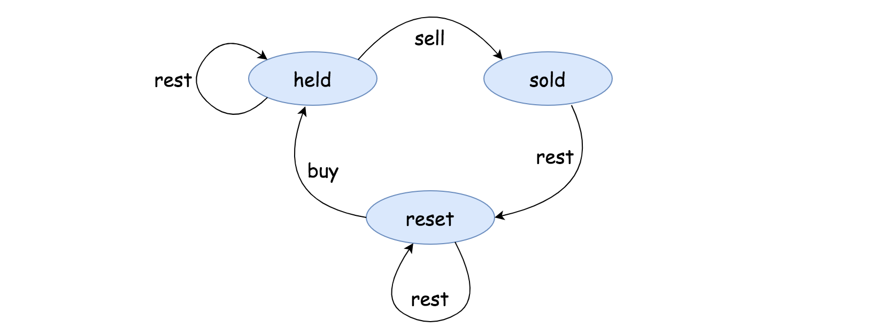
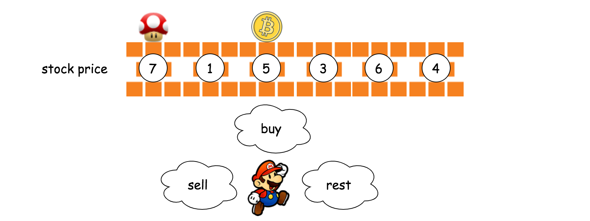
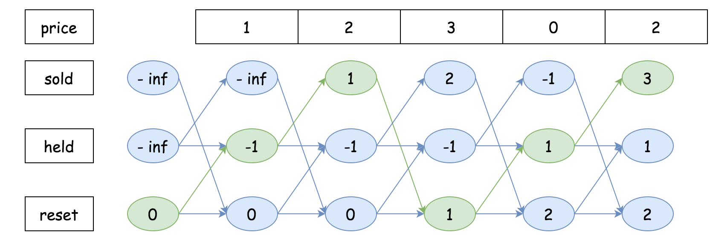
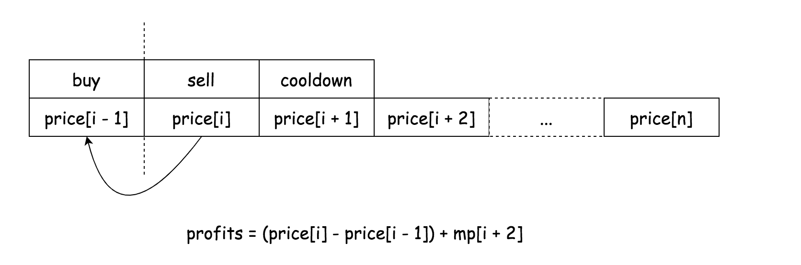

<div class="side-tools-wrapper__1TS9" context="[object Object]" data-id="0" data-is-collapsed="false" style="overflow: hidden; flex: 0 1 1575.17px;"><div class="css-1100co3-Container e5i1odf0"><div class="css-1gd46d6-Container e5i1odf0" style="position: relative;"><div class="css-jtoecv" data-header-size="normal"><div class=" css-11zaw7c-TabView e5i1odf0" data-cy="question-detail-main-tabs"><div type="default" width="100%" class="css-5wdlwo-TabViewHeader e5i1odf1"><div class="css-1lexzqe-TabHeaderContainer e5i1odf2"><div data-key="description" data-disabled="false" data-cy="description" type="default" class="css-1lelwtv-TabHeader e5i1odf4"><a href="/problems/best-time-to-buy-and-sell-stock-with-cooldown/"><div type="default" class="css-1uwsqgo-TabHeaderRow e5i1odf3"><span><div class="tab-header__20aW"><svg viewBox="0 0 24 24" width="1em" height="1em" color="inherit" class="icon__1Md2 css-1nf3fa5-ColoredIcon e5i1odf0"><path fill-rule="evenodd" d="M20 4H4c-1.1 0-2 .9-2 2v12c0 1.1.9 2 2 2h16c1.1 0 2-.9 2-2V6c0-1.1-.9-2-2-2zm0 14H4V6h16v12zM6 10h2v2H6v-2zm0 4h8v2H6v-2zm10 0h2v2h-2v-2zm-6-4h8v2h-8v-2z"></path></svg><span class="title__3f2k">Description</span></div></span></div></a></div><div data-key="solution" data-disabled="false" data-cy="solution" type="default" class="css-19j86kk-TabHeader e5i1odf4"><a href="/problems/best-time-to-buy-and-sell-stock-with-cooldown/solution/"><div type="default" class="css-1uwsqgo-TabHeaderRow e5i1odf3"><span><div class="tab-header__20aW"><svg viewBox="0 0 1024 1024" width="1em" height="1em" color="#CCA766" class="icon__1Md2 css-ut75m1-ColoredIcon e5i1odf0"><path fill-rule="evenodd" d="M393.162 246.469c0-80.108-67.427-145.644-151.237-145.644-65.851 0-123.274 40.802-143.597 99.643a50.412 50.412 0 1 1-95.31-32.847C37.36 68.057 133.144 0 241.925 0c138.87 0 252.061 110.04 252.061 246.469v106.417h312.872c83.495 0 151.237 67.742 151.237 151.237v302.474c0 83.495-67.742 151.237-151.237 151.237H201.91A151.237 151.237 0 0 1 50.673 806.597V504.123c0-83.495 67.742-151.237 151.237-151.237h191.252zM493.75 557.686a78.77 78.77 0 1 0 0 157.539 78.77 78.77 0 0 0 0-157.539z"></path></svg><span class="title__3f2k">Solution</span></div></span></div></a></div><div data-key="discuss" data-cy="discuss" type="default" class="css-1lelwtv-TabHeader e5i1odf4" data-disabled="false"><a href="/problems/best-time-to-buy-and-sell-stock-with-cooldown/discuss/"><div type="default" class="css-1uwsqgo-TabHeaderRow e5i1odf3"><span><div class="tab-header__20aW"><svg viewBox="0 0 24 24" width="1em" height="1em" color="inherit" class="icon__1Md2 css-1nf3fa5-ColoredIcon e5i1odf0"><path fill-rule="evenodd" d="M8.995 22a.955.955 0 0 1-.704-.282.955.955 0 0 1-.282-.704V18.01H3.972c-.564 0-1.033-.195-1.409-.586A1.99 1.99 0 0 1 2 15.99V3.97c0-.563.188-1.032.563-1.408C2.94 2.188 3.408 2 3.972 2h16.056c.564 0 1.033.188 1.409.563.375.376.563.845.563 1.409V15.99a1.99 1.99 0 0 1-.563 1.432c-.376.39-.845.586-1.409.586h-6.103l-3.709 3.71c-.22.187-.454.281-.704.281h-.517zm.986-6.01v3.1l3.099-3.1h6.948V3.973H3.972V15.99h6.01zm-3.99-9.013h12.018v2.018H5.991V6.977zm0 4.037h9.014v1.972H5.99v-1.972z"></path></svg><span class="title__3f2k">Discuss (811)</span></div></span></div></a></div><div data-key="submissions" data-cy="submissions" type="default" class="css-1lelwtv-TabHeader e5i1odf4" data-disabled="false"><a href="/problems/best-time-to-buy-and-sell-stock-with-cooldown/submissions/"><div type="default" class="css-1uwsqgo-TabHeaderRow e5i1odf3"><span><div class="tab-header__20aW"><svg viewBox="0 0 24 24" width="1em" height="1em" color="inherit" class="icon__1Md2 css-1nf3fa5-ColoredIcon e5i1odf0"><path d="M11.99 2C17.52 2 22 6.48 22 12s-4.48 10-10.01 10C6.47 22 2 17.52 2 12S6.47 2 11.99 2zM12 20c4.42 0 8-3.58 8-8s-3.58-8-8-8-8 3.58-8 8 3.58 8 8 8zm.5-13v5.25l4.5 2.67-.75 1.23L11 13V7z"></path></svg><span class="title__3f2k">Submissions</span></div></span></div></a></div></div></div><div data-key="description-content" data-cy="description-content" class="tab-pane__ncJk css-1ogtccs-TabContent e5i1odf5"><div class="description__24sA"><div class="css-101rr4k"><div data-cy="question-title" class="css-v3d350">309. Best Time to Buy and Sell Stock with Cooldown</div><div class="css-10o4wqw"><div diff="medium" class="css-dcmtd5">Medium</div><button class="btn__r7r7 css-1rdgofi"><svg viewBox="0 0 24 24" width="1em" height="1em" class="icon__1Md2"><path fill-rule="evenodd" d="M7 19v-8H4v8h3zM7 9c0-.55.22-1.05.58-1.41L14.17 1l1.06 1.05c.27.27.44.65.44 1.06l-.03.32L14.69 8H21c1.1 0 2 .9 2 2v2c0 .26-.05.5-.14.73l-3.02 7.05C19.54 20.5 18.83 21 18 21H4a2 2 0 0 1-2-2v-8a2 2 0 0 1 2-2h3zm2 0v10h9l3-7v-2h-9l1.34-5.34L9 9z"></path></svg><span>3983</span></button><button class="btn__r7r7 css-1rdgofi"><svg viewBox="0 0 24 24" width="1em" height="1em" class="icon__1Md2"><path fill-rule="evenodd" d="M17 3v12c0 .55-.22 1.05-.58 1.41L9.83 23l-1.06-1.05c-.27-.27-.44-.65-.44-1.06l.03-.32.95-4.57H3c-1.1 0-2-.9-2-2v-2c0-.26.05-.5.14-.73l3.02-7.05C4.46 3.5 5.17 3 6 3h11zm-2 12V5H6l-3 7v2h9l-1.34 5.34L15 15zm2-2h3V5h-3V3h3a2 2 0 0 1 2 2v8a2 2 0 0 1-2 2h-3v-2z"></path></svg><span>130</span></button><button class="btn__r7r7 css-1rdgofi"><svg viewBox="0 0 24 24" width="1em" height="1em" class="icon__1Md2"><path fill-rule="evenodd" d="M16.5 3c-1.74 0-3.41.81-4.5 2.09C10.91 3.81 9.24 3 7.5 3 4.42 3 2 5.42 2 8.5c0 3.78 3.4 6.86 8.55 11.54L12 21.35l1.45-1.32C18.6 15.36 22 12.28 22 8.5 22 5.42 19.58 3 16.5 3zm-4.4 15.55l-.1.1-.1-.1C7.14 14.24 4 11.39 4 8.5 4 6.5 5.5 5 7.5 5c1.54 0 3.04.99 3.57 2.36h1.87C13.46 5.99 14.96 5 16.5 5c2 0 3.5 1.5 3.5 3.5 0 2.89-3.14 5.74-7.9 10.05z"></path></svg><span>Add to List</span></button><button class="btn__r7r7 css-1rdgofi"><svg viewBox="0 0 24 24" width="1em" height="1em" class="icon__1Md2"><path fill-rule="evenodd" d="M17 5V2l5 5h-9a2 2 0 0 0-2 2v8H9V9a4 4 0 0 1 4-4h4zm3 14V9h2v10a2 2 0 0 1-2 2H4a2 2 0 0 1-2-2V5a2 2 0 0 1 2-2h3v2H4v14h16z"></path></svg><span>Share</span></button></div></div><div class="content__u3I1 question-content__JfgR"><div><p>You are given an array <code>prices</code> where <code>prices[i]</code> is the price of a given stock on the <code>i<sup>th</sup></code> day.</p>

<p>Find the maximum profit you can achieve. You may complete as many transactions as you like (i.e., buy one and sell one share of the stock multiple times) with the following restrictions:</p>

<ul>
	<li>After you sell your stock, you cannot buy stock on the next day (i.e., cooldown one day).</li>
</ul>

<p><strong>Note:</strong> You may not engage in multiple transactions simultaneously (i.e., you must sell the stock before you buy again).</p>

<p>&nbsp;</p>
<p><strong>Example 1:</strong></p>

<pre><strong>Input:</strong> prices = [1,2,3,0,2]
<strong>Output:</strong> 3
<strong>Explanation:</strong> transactions = [buy, sell, cooldown, buy, sell]
</pre>

<p><strong>Example 2:</strong></p>

<pre><strong>Input:</strong> prices = [1]
<strong>Output:</strong> 0
</pre>

<p>&nbsp;</p>
<p><strong>Constraints:</strong></p>

<ul>
	<li><code>1 &lt;= prices.length &lt;= 5000</code></li>
	<li><code>0 &lt;= prices[i] &lt;= 1000</code></li>
</ul>
</div></div><div style="position: relative;"><div class="css-q9155n"><div class="css-oqu510"><div class="css-y3si18">Accepted</div><div class="css-jkjiwi">204,475</div></div><div class="css-oqu510"><div class="css-y3si18">Submissions</div><div class="css-jkjiwi">416,310</div></div></div><div class="erd_scroll_detection_container erd_scroll_detection_container_animation_active" style="visibility: hidden; display: inline; width: 0px; height: 0px; z-index: -1; overflow: hidden; margin: 0px; padding: 0px;"><div dir="ltr" class="erd_scroll_detection_container" style="position: absolute; flex: 0 0 auto; overflow: hidden; z-index: -1; visibility: hidden; width: 100%; height: 100%; left: 0px; top: 0px;"><div class="erd_scroll_detection_container" style="position: absolute; flex: 0 0 auto; overflow: hidden; z-index: -1; visibility: hidden; inset: -11px -10px -10px -11px;"><div style="position: absolute; flex: 0 0 auto; overflow: scroll; z-index: -1; visibility: hidden; width: 100%; height: 100%;"><div style="position: absolute; left: 0px; top: 0px; width: 1111px; height: 71px;"></div></div><div style="position: absolute; flex: 0 0 auto; overflow: scroll; z-index: -1; visibility: hidden; width: 100%; height: 100%;"><div style="position: absolute; width: 200%; height: 200%;"></div></div></div></div></div></div><div class="header__28Cb"><div class="title__3BS7" data-size="md">Seen this question in a real interview before?</div><div class="btn-wrapper__19Tg"><button class="btn__1z2C btn-xs__3fYh btn-info__3EMF action-btn__DKeo" data-no-border="false"><div class="btn-content-container__2HVS"><span class="btn-content__2V4r">Yes</span></div></button></div><div class="btn-wrapper__19Tg"><button class="btn__1z2C btn-xs__3fYh btn-info__3EMF action-btn__DKeo" data-no-border="false"><div class="btn-content-container__2HVS"><span class="btn-content__2V4r">No</span></div></button></div></div><div class="css-isal7m"><div class="css-16xmbhl e5i1odf0"><div class="css-1jqueqk"><div class="header__2X5E">Companies<svg viewBox="0 0 1024 1024" width="1em" height="1em" class="icon__1Md2 unlock-icon__zqck"><path fill-rule="evenodd" d="M393.162 246.469c0-80.108-67.427-145.644-151.237-145.644-65.851 0-123.274 40.802-143.597 99.643a50.412 50.412 0 1 1-95.31-32.847C37.36 68.057 133.144 0 241.925 0c138.87 0 252.061 110.04 252.061 246.469v106.417h312.872c83.495 0 151.237 67.742 151.237 151.237v302.474c0 83.495-67.742 151.237-151.237 151.237H201.91A151.237 151.237 0 0 1 50.673 806.597V504.123c0-83.495 67.742-151.237 151.237-151.237h191.252zM493.75 557.686a78.77 78.77 0 1 0 0 157.539 78.77 78.77 0 0 0 0-157.539z"></path></svg><svg viewBox="0 0 24 24" width="1em" height="1em" class="icon__1Md2 info-icon__2U30"><path fill-rule="evenodd" d="M13.91 3.5c.436.031.795.187 1.075.468.28.28.421.63.421 1.052 0 .42-.14.771-.42 1.052-.281.28-.64.42-1.076.42-.437 0-.795-.14-1.076-.42-.28-.28-.42-.631-.42-1.052 0-.421.14-.772.42-1.052.28-.281.64-.437 1.076-.468zm-.374 4.77c.56 0 .85.233.865.7.015.468-.024.874-.117 1.217l-1.17 4.395c-.404 1.465-.576 2.385-.514 2.759.125.25.398.25.819 0 .42-.25.818-.5 1.192-.748l.047-.047c.062 0 .125.03.187.093l.187.328c.031.062 0 .124-.094.187L12.6 18.79c-.405.28-.966.507-1.683.678-.717.172-1.029-.35-.935-1.566.561-2.681 1.036-4.684 1.426-6.009.39-1.325.101-1.675-.865-1.052l-1.075.702c-.094.062-.156.085-.187.07-.032-.016-.078-.102-.14-.257L9 11.122c0-.031.047-.094.14-.187.094-.094.678-.522 1.754-1.286 1.075-.764 1.956-1.224 2.642-1.38z"></path></svg></div></div><svg viewBox="0 0 24 24" width="1em" height="1em" class="icon__1Md2 css-juvn7s"><path fill-rule="evenodd" d="M16.59 8.59L12 13.17 7.41 8.59 6 10l6 6 6-6z"></path></svg></div><div class="css-1p7cto6"><span class="time-period-button-group__2HTV"><button class="time-period-button__3neY disabled__3ucc" disabled="">0 ~ 6 months</button><button class="time-period-button__3neY selected__1jx3">6 months ~ 1 year</button><button class="time-period-button__3neY">1 year ~ 2 years</button></span><div class="company-tag-wrapper__1rBy"><a href="/company/adobe"><button class="btn__1z2C btn-xs__3fYh tag-btn__3sGH company-tag__23z7" data-no-border="false"><div class="btn-content-container__2HVS"><span class="btn-content__2V4r">Adobe</span><span class="separator__2KJB">|</span><span>3</span></div></button></a><a href="/company/goldman-sachs"><button class="btn__1z2C btn-xs__3fYh tag-btn__3sGH company-tag__23z7" data-no-border="false"><div class="btn-content-container__2HVS"><span class="btn-content__2V4r">Goldman Sachs</span><span class="separator__2KJB">|</span><span>3</span></div></button></a><a href="/company/amazon"><button class="btn__1z2C btn-xs__3fYh tag-btn__3sGH company-tag__23z7" data-no-border="false"><div class="btn-content-container__2HVS"><span class="btn-content__2V4r">Amazon</span><span class="separator__2KJB">|</span><span>2</span></div></button></a><a href="/company/yahoo"><button class="btn__1z2C btn-xs__3fYh tag-btn__3sGH company-tag__23z7" data-no-border="false"><div class="btn-content-container__2HVS"><span class="btn-content__2V4r">Yahoo</span><span class="separator__2KJB">|</span><span>2</span></div></button></a></div></div></div><div class="css-isal7m"><div class="css-blecvm e5i1odf0"><div class="css-1jqueqk"><div class="header__2RZv">Related Topics</div></div><svg viewBox="0 0 24 24" width="1em" height="1em" class="icon__1Md2 css-1ehpd12"><path fill-rule="evenodd" d="M16.59 8.59L12 13.17 7.41 8.59 6 10l6 6 6-6z"></path></svg></div><div class="css-1hky5w4"><a class="topic-tag__1jni" href="/tag/array/"><span data-size="xs" class="tag__24Rd">Array</span></a><a class="topic-tag__1jni" href="/tag/dynamic-programming/"><span data-size="xs" class="tag__24Rd">Dynamic Programming</span></a></div></div><div class="css-isal7m"><div class="css-16xmbhl e5i1odf0"><div class="css-1jqueqk"><div class="header__qVrK">Similar Questions</div></div><svg viewBox="0 0 24 24" width="1em" height="1em" class="icon__1Md2 css-juvn7s"><path fill-rule="evenodd" d="M16.59 8.59L12 13.17 7.41 8.59 6 10l6 6 6-6z"></path></svg></div><div class="css-1p7cto6"><div class="question__25Pw"><a class="title__1kvt" href="/problems/best-time-to-buy-and-sell-stock/">Best Time to Buy and Sell Stock</a><div class="difficulty__ES5S">Easy</div></div><div class="question__25Pw"><a class="title__1kvt" href="/problems/best-time-to-buy-and-sell-stock-ii/">Best Time to Buy and Sell Stock II</a><div class="difficulty__ES5S">Easy</div></div></div></div></div></div><div data-key="solution-content" data-cy="solution-content" class="tab-pane__ncJk css-1eusa4c-TabContent e5i1odf5"><div id="solution" class="solution__1uRe"><div class="nav__1n5p"><a class="ant-dropdown-link ant-dropdown-trigger"><div>Quick Navigation</div></a></div><div class="contentwrapper__2jML"><div class="rating-container__17_x"><div class="cont__FQzg"><div class="container__19j8"><div class="background-stars__QHjZ"><button class="btn__h1WO"><div><svg viewBox="0 0 24 24" width="1em" height="1em" class="icon__1Md2 star-icon__1M5E"><path fill-rule="evenodd" d="M12 17.27L18.18 21l-1.64-7.03L22 9.24l-7.19-.61L12 2 9.19 8.63 2 9.24l5.46 4.73L5.82 21z"></path></svg></div></button><button class="btn__h1WO"><div><svg viewBox="0 0 24 24" width="1em" height="1em" class="icon__1Md2 star-icon__1M5E"><path fill-rule="evenodd" d="M12 17.27L18.18 21l-1.64-7.03L22 9.24l-7.19-.61L12 2 9.19 8.63 2 9.24l5.46 4.73L5.82 21z"></path></svg></div></button><button class="btn__h1WO"><div><svg viewBox="0 0 24 24" width="1em" height="1em" class="icon__1Md2 star-icon__1M5E"><path fill-rule="evenodd" d="M12 17.27L18.18 21l-1.64-7.03L22 9.24l-7.19-.61L12 2 9.19 8.63 2 9.24l5.46 4.73L5.82 21z"></path></svg></div></button><button class="btn__h1WO"><div><svg viewBox="0 0 24 24" width="1em" height="1em" class="icon__1Md2 star-icon__1M5E"><path fill-rule="evenodd" d="M12 17.27L18.18 21l-1.64-7.03L22 9.24l-7.19-.61L12 2 9.19 8.63 2 9.24l5.46 4.73L5.82 21z"></path></svg></div></button><button class="btn__h1WO"><div><svg viewBox="0 0 24 24" width="1em" height="1em" class="icon__1Md2 star-icon__1M5E"><path fill-rule="evenodd" d="M12 17.27L18.18 21l-1.64-7.03L22 9.24l-7.19-.61L12 2 9.19 8.63 2 9.24l5.46 4.73L5.82 21z"></path></svg></div></button></div><div class="foreground-stars__2P8U" style="width: 97.42%;"><div class="btn__h1WO"><svg viewBox="0 0 24 24" width="1em" height="1em" class="icon__1Md2 star-icon__1M5E"><path fill-rule="evenodd" d="M12 17.27L18.18 21l-1.64-7.03L22 9.24l-7.19-.61L12 2 9.19 8.63 2 9.24l5.46 4.73L5.82 21z"></path></svg></div><div class="btn__h1WO"><svg viewBox="0 0 24 24" width="1em" height="1em" class="icon__1Md2 star-icon__1M5E"><path fill-rule="evenodd" d="M12 17.27L18.18 21l-1.64-7.03L22 9.24l-7.19-.61L12 2 9.19 8.63 2 9.24l5.46 4.73L5.82 21z"></path></svg></div><div class="btn__h1WO"><svg viewBox="0 0 24 24" width="1em" height="1em" class="icon__1Md2 star-icon__1M5E"><path fill-rule="evenodd" d="M12 17.27L18.18 21l-1.64-7.03L22 9.24l-7.19-.61L12 2 9.19 8.63 2 9.24l5.46 4.73L5.82 21z"></path></svg></div><div class="btn__h1WO"><svg viewBox="0 0 24 24" width="1em" height="1em" class="icon__1Md2 star-icon__1M5E"><path fill-rule="evenodd" d="M12 17.27L18.18 21l-1.64-7.03L22 9.24l-7.19-.61L12 2 9.19 8.63 2 9.24l5.46 4.73L5.82 21z"></path></svg></div><div class="btn__h1WO"><svg viewBox="0 0 24 24" width="1em" height="1em" class="icon__1Md2 star-icon__1M5E"><path fill-rule="evenodd" d="M12 17.27L18.18 21l-1.64-7.03L22 9.24l-7.19-.61L12 2 9.19 8.63 2 9.24l5.46 4.73L5.82 21z"></path></svg></div></div></div><p class="desc__3NDJ">Average Rating: 4.87 (93 votes)</p></div><div><div class="css-1nm4v7d">Premium</div></div></div><div class="content__QRGW"><div><h2>Solution</h2>
<hr>
<h4 id="overview">Overview</h4>
<p>First of all, we would like to mention that this is yet another problem from the series of Best-Time-to-Buy-and-Sell-Stock problems, which we list as follows:</p>
<ul>
<li><a href="https://leetcode.com/problems/best-time-to-buy-and-sell-stock/" rel="ugc">Best Time to Buy and Sell Stock</a></li>
<li><a href="https://leetcode.com/problems/best-time-to-buy-and-sell-stock-ii/" rel="ugc">Best Time to Buy and Sell Stock II</a></li>
<li><a href="https://leetcode.com/problems/best-time-to-buy-and-sell-stock-iii/" rel="ugc">Best Time to Buy and Sell Stock III</a></li>
<li><a href="https://leetcode.com/problems/best-time-to-buy-and-sell-stock-iv/" rel="ugc">Best Time to Buy and Sell Stock IV</a></li>
</ul>
<p>One could try to resolve them one by one, which certainly could help with this problem.</p>
<p>There have been quite some excellent posts in the <a href="https://leetcode.com/problems/best-time-to-buy-and-sell-stock-with-cooldown/discuss/" rel="ugc">Discussion forum</a>. We would like to mention that the user <a href="https://leetcode.com/problems/best-time-to-buy-and-sell-stock-with-cooldown/discuss/75924/Most-consistent-ways-of-dealing-with-the-series-of-stock-problems" rel="ugc">fun4LeetCode</a> even developed a mathematical representation that is able to be generalized to each of the problems.</p>
<p>That being said, here we contribute some approaches, which hopefully could provide you different perspectives for the problem.</p>
<p>As one might have seen the hint from the problem description, which says "dynamic programming" (<em>i.e.</em> DP), we could tackle this problem mainly with the technique called <strong>dynamic programming</strong>.</p>
<p>Often the case, in order to come up with a dynamic programming solution, it would be beneficial to draw down some mathematical formulas to model the problem.</p>
<blockquote>
<p>As a reminder, the nature of dynamic programming is to break the original problem into several subproblems, and then reuse the results of subproblems for the original problem.</p>
</blockquote>
<p>Therefore, due to the nature of DP, the mathematical formulas that we should come up with would almost certainly assume the form of <strong><em>recursion</em></strong>.</p>
<p>Before embarking on the next sections of this article, we kindly ask the audiences to keep an open mind, fasten your seat belts and enjoy the ride with a heavy (yet healthy) dose of mathematical formulas.
<br>
<br></p>
<hr>
<h4 id="approach-1-dynamic-programming-with-state-machine">Approach 1: Dynamic Programming with State Machine</h4>
<p><strong>Intuition</strong></p>
<p>First of all, let us take a different perspective to look at the problem, unlike the other algorithmic problems.</p>
<p>Here, we will treat the problem as a game, and the trader as an agent in the game.
The agent can take actions that lead to gain or lose of game points (<em>i.e.</em> profits).
And the goal of the game for the agent is to gain the maximal points.</p>
<p>In addition, we will introduce a tool called <a href="https://en.wikipedia.org/wiki/Finite-state_machine" rel="ugc">state machine</a>, which is a mathematical model of computation.
Later one will see how the state machine coupled with the dynamic programming technique can help us solve the problem easily.</p>
<p>In the following sections, we will first define a <em><strong>state machine</strong></em> that is used to model the behaviors and states of the game agent.</p>
<p>Then, we will demonstrate how to apply the state machine to solve the problem.</p>
<p><strong>Definition</strong></p>
<p>Let us define a <strong><em>state machine</em></strong> to model our agent. The state machine consists of three states, which we define as follows:</p>
<ul>
<li>
<p>state <code>held</code>: in this state, the agent holds a stock that it bought at some point before.
<br></p>
</li>
<li>
<p>state <code>sold</code>: in this state, the agent has just sold a stock right before entering this state. And the agent holds no stock at hand.
<br></p>
</li>
<li>
<p>state <code>reset</code>: first of all, one can consider this state as the starting point, where the agent holds no stock and did not sell a stock before.
More importantly, it is also the <em>transient</em> state before the <code>held</code> and <code>sold</code>.
Due to the <strong><em>cooldown</em></strong> rule, after the <code>sold</code> state, the agent can not immediately acquire any stock, but is <em>forced</em> into the <code>reset</code> state.
One can consider this state as a "reset" button for the cycles of buy and sell transactions.</p>
</li>
</ul>
<p>At any moment, the agent can only be in <strong><em>one</em></strong> state. The agent would transition to another state by performing some actions, namely:</p>
<ul>
<li>
<p>action <code>sell</code>: the agent sells a stock at the current moment. After this action, the agent would transition to the <code>sold</code> state.</p>
</li>
<li>
<p>action <code>buy</code>: the agent acquires a stock at the current moment. After this action, the agent would transition to the <code>held</code> state.</p>
</li>
<li>
<p>action <code>rest</code>: this is the action that the agent does no transaction, neither buy or sell. For instance, while holding a stock at the <code>held</code> state, the agent might simply do nothing, and at the next moment the agent would remain in the <code>held</code> state.</p>
</li>
</ul>
<p>Now, we can assemble the above states and actions into a <strong>state machine</strong>, which we show in the following graph where each node represents a state, and each edge represents a transition between two states. On top of each edge, we indicate the action that triggers the transition.</p>
<p></p>
<p>Notice that, in all states except the <code>sold</code> state, by doing nothing, we would remain in the same state, which is why there is a self-looped transition on these states.</p>
<p><strong>Deduction</strong></p>
<p>Now, one might wonder how exactly the state machine that we defined can help to solve the problem.</p>
<p>As we mentioned before, we model the problem as a <strong><em>game</em></strong>, and the trader as an <strong><em>agent</em></strong> in the game. And this is where our state machine comes into the picture. The behaviors and the states of the game agent can be modeled by our state machine.</p>
<p></p>
<p>Given a list stock prices (<em>i.e.</em> <code>price[0...n]</code>), our agent would walk through each price point one by one.
At each point, the agent would be in one of three states (<em>i.e.</em> <code>held</code>, <code>sold</code> and <code>reset</code>) that we defined before.
And at each point, the agent would take one of the three actions (<em>i.e.</em> <code>buy</code>, <code>sell</code> and <code>rest</code>), which then would lead to the next state at the next price point.</p>
<blockquote>
<p>Now if we chain up each state at each price point, it would form a <strong><em>graph</em></strong> where each <strong><em>path</em></strong> that starts from the initial price point and ends at the last price point represents a combination of transactions that the agent could perform through out the game.</p>
</blockquote>
<p></p>
<p>The above graph shows all possible paths that our game agent agent walks through the list, which corresponds to all possible combinations of transactions that the trader can perform with the given price sequence.</p>
<blockquote>
<p>In order to solve the problem, the goal is to find such a path in the above graph that maximizes the profits.</p>
</blockquote>
<p>In each node of graph, we also indicate the maximal profits that the agent has gained so far in each state of each step. And we highlight the path that generates the maximal profits.
Don't worry about them for the moment. We will explain in detail how to calculate in the next section.</p>
<p><strong>Algorithm</strong></p>
<p>In order to implement the above state machine, we could define three arrays (<em>i.e.</em> <code>held[i]</code>, <code>sold[i]</code> and <code>reset[i]</code>) which correspond to the three states that we defined before.</p>
<blockquote>
<p>Each element in each array represents the maximal profits that we could gain at the specific price point <code>i</code> with the specific state.
For instance, the element <code>sold[2]</code> represents the maximal profits we gain if we sell the stock at the price point <code>price[2]</code>.</p>
</blockquote>
<p>According to the state machine we defined before, we can then deduce the formulas to calculate the values for the state arrays, as follows:</p>
<p><span class="katex"><span class="katex-mathml"><math><semantics><mrow><mtext>sold</mtext><mo>[</mo><mi>i</mi><mo>]</mo><mo>=</mo><mtext>hold</mtext><mo>[</mo><mi>i</mi><mo>−</mo><mn>1</mn><mo>]</mo><mo>+</mo><mtext>price</mtext><mo>[</mo><mi>i</mi><mo>]</mo><mspace linebreak="newline"></mspace><mtext>held</mtext><mo>[</mo><mi>i</mi><mo>]</mo><mo>=</mo><mi>max</mi><mo>⁡</mo><mrow><mo>(</mo><mtext>held</mtext><mo>[</mo><mi>i</mi><mo>−</mo><mn>1</mn><mo>]</mo><mo separator="true">,</mo><mspace width="1em"></mspace><mtext>reset</mtext><mo>[</mo><mi>i</mi><mo>−</mo><mn>1</mn><mo>]</mo><mo>−</mo><mtext>price</mtext><mo>[</mo><mi>i</mi><mo>]</mo><mo>)</mo></mrow><mspace linebreak="newline"></mspace><mtext>reset</mtext><mo>[</mo><mi>i</mi><mo>]</mo><mo>=</mo><mi>max</mi><mo>⁡</mo><mrow><mo>(</mo><mtext>reset</mtext><mo>[</mo><mi>i</mi><mo>−</mo><mn>1</mn><mo>]</mo><mo separator="true">,</mo><mspace width="1em"></mspace><mtext>sold</mtext><mo>[</mo><mi>i</mi><mo>−</mo><mn>1</mn><mo>]</mo><mo>)</mo></mrow></mrow><annotation encoding="application/x-tex">
    \text{sold}[i] = \text{hold}[i-1] + \text{price}[i] \\
    \text{held}[i] = \max{(\text{held}[i-1], \quad \text{reset}[i-1] - \text{price}[i])} \\
    \text{reset}[i] = \max{(\text{reset}[i-1], \quad \text{sold}[i-1])} 
</annotation></semantics></math></span><span class="katex-html" aria-hidden="true"><span class="base"><span class="strut" style="height:1em;vertical-align:-0.25em;"></span><span class="mord text"><span class="mord">sold</span></span><span class="mopen">[</span><span class="mord mathdefault">i</span><span class="mclose">]</span><span class="mspace" style="margin-right:0.2777777777777778em;"></span><span class="mrel">=</span><span class="mspace" style="margin-right:0.2777777777777778em;"></span></span><span class="base"><span class="strut" style="height:1em;vertical-align:-0.25em;"></span><span class="mord text"><span class="mord">hold</span></span><span class="mopen">[</span><span class="mord mathdefault">i</span><span class="mspace" style="margin-right:0.2222222222222222em;"></span><span class="mbin">−</span><span class="mspace" style="margin-right:0.2222222222222222em;"></span></span><span class="base"><span class="strut" style="height:1em;vertical-align:-0.25em;"></span><span class="mord">1</span><span class="mclose">]</span><span class="mspace" style="margin-right:0.2222222222222222em;"></span><span class="mbin">+</span><span class="mspace" style="margin-right:0.2222222222222222em;"></span></span><span class="base"><span class="strut" style="height:1em;vertical-align:-0.25em;"></span><span class="mord text"><span class="mord">price</span></span><span class="mopen">[</span><span class="mord mathdefault">i</span><span class="mclose">]</span></span><span class="mspace newline"></span><span class="base"><span class="strut" style="height:1em;vertical-align:-0.25em;"></span><span class="mord text"><span class="mord">held</span></span><span class="mopen">[</span><span class="mord mathdefault">i</span><span class="mclose">]</span><span class="mspace" style="margin-right:0.2777777777777778em;"></span><span class="mrel">=</span><span class="mspace" style="margin-right:0.2777777777777778em;"></span></span><span class="base"><span class="strut" style="height:1em;vertical-align:-0.25em;"></span><span class="mop">max</span><span class="mspace" style="margin-right:0.16666666666666666em;"></span><span class="mord"><span class="mopen">(</span><span class="mord text"><span class="mord">held</span></span><span class="mopen">[</span><span class="mord mathdefault">i</span><span class="mspace" style="margin-right:0.2222222222222222em;"></span><span class="mbin">−</span><span class="mspace" style="margin-right:0.2222222222222222em;"></span><span class="mord">1</span><span class="mclose">]</span><span class="mpunct">,</span><span class="mspace" style="margin-right:0.16666666666666666em;"></span><span class="mspace" style="margin-right:1em;"></span><span class="mord text"><span class="mord">reset</span></span><span class="mopen">[</span><span class="mord mathdefault">i</span><span class="mspace" style="margin-right:0.2222222222222222em;"></span><span class="mbin">−</span><span class="mspace" style="margin-right:0.2222222222222222em;"></span><span class="mord">1</span><span class="mclose">]</span><span class="mspace" style="margin-right:0.2222222222222222em;"></span><span class="mbin">−</span><span class="mspace" style="margin-right:0.2222222222222222em;"></span><span class="mord text"><span class="mord">price</span></span><span class="mopen">[</span><span class="mord mathdefault">i</span><span class="mclose">]</span><span class="mclose">)</span></span></span><span class="mspace newline"></span><span class="base"><span class="strut" style="height:1em;vertical-align:-0.25em;"></span><span class="mord text"><span class="mord">reset</span></span><span class="mopen">[</span><span class="mord mathdefault">i</span><span class="mclose">]</span><span class="mspace" style="margin-right:0.2777777777777778em;"></span><span class="mrel">=</span><span class="mspace" style="margin-right:0.2777777777777778em;"></span></span><span class="base"><span class="strut" style="height:1em;vertical-align:-0.25em;"></span><span class="mop">max</span><span class="mspace" style="margin-right:0.16666666666666666em;"></span><span class="mord"><span class="mopen">(</span><span class="mord text"><span class="mord">reset</span></span><span class="mopen">[</span><span class="mord mathdefault">i</span><span class="mspace" style="margin-right:0.2222222222222222em;"></span><span class="mbin">−</span><span class="mspace" style="margin-right:0.2222222222222222em;"></span><span class="mord">1</span><span class="mclose">]</span><span class="mpunct">,</span><span class="mspace" style="margin-right:0.16666666666666666em;"></span><span class="mspace" style="margin-right:1em;"></span><span class="mord text"><span class="mord">sold</span></span><span class="mopen">[</span><span class="mord mathdefault">i</span><span class="mspace" style="margin-right:0.2222222222222222em;"></span><span class="mbin">−</span><span class="mspace" style="margin-right:0.2222222222222222em;"></span><span class="mord">1</span><span class="mclose">]</span><span class="mclose">)</span></span></span></span></span></p>
<p>Here is how we interpret each formulas:</p>
<ul>
<li>
<p><span class="katex"><span class="katex-mathml"><math><semantics><mrow><mtext>sold</mtext><mo>[</mo><mi>i</mi><mo>]</mo></mrow><annotation encoding="application/x-tex">\text{sold}[i]</annotation></semantics></math></span><span class="katex-html" aria-hidden="true"><span class="base"><span class="strut" style="height:1em;vertical-align:-0.25em;"></span><span class="mord text"><span class="mord">sold</span></span><span class="mopen">[</span><span class="mord mathdefault">i</span><span class="mclose">]</span></span></span></span>: the previous state of <code>sold</code> can only be <code>held</code>. Therefore, the maximal profits of this state is the maximal profits of the previous state plus the revenue by selling the stock at the current price.
<br></p>
</li>
<li>
<p><span class="katex"><span class="katex-mathml"><math><semantics><mrow><mtext>held</mtext><mo>[</mo><mi>i</mi><mo>]</mo></mrow><annotation encoding="application/x-tex">\text{held}[i]</annotation></semantics></math></span><span class="katex-html" aria-hidden="true"><span class="base"><span class="strut" style="height:1em;vertical-align:-0.25em;"></span><span class="mord text"><span class="mord">held</span></span><span class="mopen">[</span><span class="mord mathdefault">i</span><span class="mclose">]</span></span></span></span>: the previous state of <code>held</code> could also be <code>held</code>, <em>i.e.</em> one does no transaction. Or its previous state could be <code>reset</code>, from which state, one can acquire a stock at the current price point.
<br></p>
</li>
<li>
<p><span class="katex"><span class="katex-mathml"><math><semantics><mrow><mtext>reset</mtext><mo>[</mo><mi>i</mi><mo>]</mo></mrow><annotation encoding="application/x-tex">\text{reset}[i]</annotation></semantics></math></span><span class="katex-html" aria-hidden="true"><span class="base"><span class="strut" style="height:1em;vertical-align:-0.25em;"></span><span class="mord text"><span class="mord">reset</span></span><span class="mopen">[</span><span class="mord mathdefault">i</span><span class="mclose">]</span></span></span></span>: the previous state of <code>reset</code> could either be <code>reset</code> or <code>sold</code>. Both transitions do not involve any transaction with the stock.</p>
</li>
</ul>
<blockquote>
<p>Finally, the maximal profits that we can gain from this game would be <span class="katex"><span class="katex-mathml"><math><semantics><mrow><mi>max</mi><mo>⁡</mo><mrow><mo>(</mo><mtext>sold</mtext><mo>[</mo><mi>n</mi><mo>]</mo><mo separator="true">,</mo><mtext>reset</mtext><mo>[</mo><mi>n</mi><mo>]</mo><mo>)</mo></mrow></mrow><annotation encoding="application/x-tex">\max{(\text{sold}[n], \text{reset}[n])}</annotation></semantics></math></span><span class="katex-html" aria-hidden="true"><span class="base"><span class="strut" style="height:1em;vertical-align:-0.25em;"></span><span class="mop">max</span><span class="mspace" style="margin-right:0.16666666666666666em;"></span><span class="mord"><span class="mopen">(</span><span class="mord text"><span class="mord">sold</span></span><span class="mopen">[</span><span class="mord mathdefault">n</span><span class="mclose">]</span><span class="mpunct">,</span><span class="mspace" style="margin-right:0.16666666666666666em;"></span><span class="mord text"><span class="mord">reset</span></span><span class="mopen">[</span><span class="mord mathdefault">n</span><span class="mclose">]</span><span class="mclose">)</span></span></span></span></span>, <em>i.e.</em> at the last price point, either we sell the stock or we simply do no transaction, to have the maximal profits.
It makes no sense to acquire the stock at the last price point, which only leads to the reduction of profits.</p>
</blockquote>
<p>In particular, as a base case, the game should be kicked off from the state <code>reset</code>, since initially we don't hold any stock and we don't have any stock to sell neither.
Therefore, we assign the initial values of <code>sold[-1]</code> and <code>held[-1]</code> to be <code>Integer.MIN_VALUE</code>, which are intended to <em>render</em> the paths that start from these two states impossible.</p>
<p>As one might notice in the above formulas, in order to calculate the value for each array, we reuse the intermediate values, and this is where the paradigm of <em><strong>dynamic programming</strong></em> comes into play.</p>
<p>More specifically, we only need the intermediate values at exactly one step before the current step. As a result, rather than keeping all the values in the three arrays, we could use a <strong><em>sliding window</em></strong> of size <code>1</code> to calculate the value for <span class="katex"><span class="katex-mathml"><math><semantics><mrow><mi>max</mi><mo>⁡</mo><mrow><mo>(</mo><mtext>sold</mtext><mo>[</mo><mi>n</mi><mo>]</mo><mo separator="true">,</mo><mtext>reset</mtext><mo>[</mo><mi>n</mi><mo>]</mo><mo>)</mo></mrow></mrow><annotation encoding="application/x-tex">\max{(\text{sold}[n], \text{reset}[n])}</annotation></semantics></math></span><span class="katex-html" aria-hidden="true"><span class="base"><span class="strut" style="height:1em;vertical-align:-0.25em;"></span><span class="mop">max</span><span class="mspace" style="margin-right:0.16666666666666666em;"></span><span class="mord"><span class="mopen">(</span><span class="mord text"><span class="mord">sold</span></span><span class="mopen">[</span><span class="mord mathdefault">n</span><span class="mclose">]</span><span class="mpunct">,</span><span class="mspace" style="margin-right:0.16666666666666666em;"></span><span class="mord text"><span class="mord">reset</span></span><span class="mopen">[</span><span class="mord mathdefault">n</span><span class="mclose">]</span><span class="mclose">)</span></span></span></span></span>.</p>
<p>In the following animation, we demonstrate the process on how the three arrays are calculated step by step.</p>
<div><div><div class="dia-container__jsK9" style="width: 920px; height: 316px;"><div class="diaporama__1pV2"></div><div class="initial-play-wrapper__2HUL"><div class="initial-play__2m2N play-container__2y5J"><svg viewBox="0 0 24 24" width="1em" height="1em" class="icon__1Md2"><defs><path id="play-arrow_svg__a" d="M8 5v14l11-7z"></path><mask id="play-arrow_svg__b"><use fill-rule="evenodd" xlink:href="#play-arrow_svg__a"></use></mask></defs><g fill-rule="evenodd"><use xlink:href="#play-arrow_svg__a"></use><g fill-rule="nonzero" mask="url(#play-arrow_svg__b)"><path d="M0 0h24v24H0z"></path></g></g></svg></div></div><div class="control-panel__1ogu"><div class="controls__3i3n"><svg viewBox="0 0 24 24" width="1em" height="1em" class="icon__1Md2 control-group__3APN"><path fill-rule="evenodd" d="M15.41 7.41L14 6l-6 6 6 6 1.41-1.41L10.83 12z"></path></svg><svg viewBox="0 0 24 24" width="1em" height="1em" class="icon__1Md2 toggle-play__3nt0 control-group__3APN"><defs><path id="play-arrow_svg__a" d="M8 5v14l11-7z"></path><mask id="play-arrow_svg__b"><use fill-rule="evenodd" xlink:href="#play-arrow_svg__a"></use></mask></defs><g fill-rule="evenodd"><use xlink:href="#play-arrow_svg__a"></use><g fill-rule="nonzero" mask="url(#play-arrow_svg__b)"><path d="M0 0h24v24H0z"></path></g></g></svg><svg viewBox="0 0 24 24" width="1em" height="1em" class="icon__1Md2 control-group__3APN"><path fill-rule="evenodd" d="M10 6L8.59 7.41 13.17 12l-4.58 4.59L10 18l6-6z"></path></svg></div><div class="frame-counter__mLmP">6 / 7</div></div></div></div></div>
<blockquote>
<p>As a <strong><em>byproduct</em></strong> of this algorithm, not only would we obtain the maximal profits at the end, but also we could recover each action that we should perform along the path, although this is not required by the problem.</p>
</blockquote>
<p>In the above graph, by starting from the final state, and walking backward following the path, we could obtain a sequence of actions that leads to the maximal profits at the end, <em>i.e.</em> [<code>buy</code>, <code>sell</code>, <code>cooldown</code>, <code>buy</code>, <code>sell</code>].</p>
<iframe src="https://leetcode.com/playground/G3tLgwPY/shared" frameborder="0" width="100%" height="378" name="G3tLgwPY"></iframe>
<p><strong>Complexity Analysis</strong></p>
<ul>
<li>
<p>Time Complexity: <span class="katex"><span class="katex-mathml"><math><semantics><mrow><mi mathvariant="script">O</mi><mo>(</mo><mi>N</mi><mo>)</mo></mrow><annotation encoding="application/x-tex">\mathcal{O}(N)</annotation></semantics></math></span><span class="katex-html" aria-hidden="true"><span class="base"><span class="strut" style="height:1em;vertical-align:-0.25em;"></span><span class="mord"><span class="mord mathcal" style="margin-right:0.02778em;">O</span></span><span class="mopen">(</span><span class="mord mathdefault" style="margin-right:0.10903em;">N</span><span class="mclose">)</span></span></span></span> where <span class="katex"><span class="katex-mathml"><math><semantics><mrow><mi>N</mi></mrow><annotation encoding="application/x-tex">N</annotation></semantics></math></span><span class="katex-html" aria-hidden="true"><span class="base"><span class="strut" style="height:0.68333em;vertical-align:0em;"></span><span class="mord mathdefault" style="margin-right:0.10903em;">N</span></span></span></span> is the length of the input price list.</p>
<ul>
<li>We have one loop over the input list, and the operation within one iteration takes constant time.
<br></li>
</ul>
</li>
<li>
<p>Space Complexity: <span class="katex"><span class="katex-mathml"><math><semantics><mrow><mi mathvariant="script">O</mi><mo>(</mo><mn>1</mn><mo>)</mo></mrow><annotation encoding="application/x-tex">\mathcal{O}(1)</annotation></semantics></math></span><span class="katex-html" aria-hidden="true"><span class="base"><span class="strut" style="height:1em;vertical-align:-0.25em;"></span><span class="mord"><span class="mord mathcal" style="margin-right:0.02778em;">O</span></span><span class="mopen">(</span><span class="mord">1</span><span class="mclose">)</span></span></span></span>, constant memory is used regardless the size of the input.
<br>
<br></p>
</li>
</ul>
<hr>
<h4 id="approach-2-yetanother-dynamic-programming">Approach 2: Yet-Another Dynamic Programming</h4>
<p><strong>Intuition</strong></p>
<p>Most of the times, there are more than one approaches to decompose the problem, so that we could apply the technique of dynamic programming.</p>
<p>Here we would like to propose a different perspective on how to model the problem purely with mathematical formulas.</p>
<p>Again, this would be a journey loaded with mathematical notations, which might be complicated, but it showcases how the mathematics could help one with the dynamic <em>programming</em> (pun intended).</p>
<p><strong>Definition</strong></p>
<p>For a sequence of prices, denoted as <span class="katex"><span class="katex-mathml"><math><semantics><mrow><mtext>price</mtext><mo>[</mo><mn>0</mn><mo separator="true">,</mo><mn>1</mn><mo separator="true">,</mo><mi mathvariant="normal">.</mi><mi mathvariant="normal">.</mi><mi mathvariant="normal">.</mi><mo separator="true">,</mo><mi>n</mi><mo>]</mo></mrow><annotation encoding="application/x-tex">\text{price}[0, 1, ..., n]</annotation></semantics></math></span><span class="katex-html" aria-hidden="true"><span class="base"><span class="strut" style="height:1em;vertical-align:-0.25em;"></span><span class="mord text"><span class="mord">price</span></span><span class="mopen">[</span><span class="mord">0</span><span class="mpunct">,</span><span class="mspace" style="margin-right:0.16666666666666666em;"></span><span class="mord">1</span><span class="mpunct">,</span><span class="mspace" style="margin-right:0.16666666666666666em;"></span><span class="mord">.</span><span class="mord">.</span><span class="mord">.</span><span class="mpunct">,</span><span class="mspace" style="margin-right:0.16666666666666666em;"></span><span class="mord mathdefault">n</span><span class="mclose">]</span></span></span></span>, let us first define our <strong>target</strong> function called <span class="katex"><span class="katex-mathml"><math><semantics><mrow><mtext>MP</mtext><mo>(</mo><mi>i</mi><mo>)</mo></mrow><annotation encoding="application/x-tex">\text{MP}(i)</annotation></semantics></math></span><span class="katex-html" aria-hidden="true"><span class="base"><span class="strut" style="height:1em;vertical-align:-0.25em;"></span><span class="mord text"><span class="mord">MP</span></span><span class="mopen">(</span><span class="mord mathdefault">i</span><span class="mclose">)</span></span></span></span>.
The function <span class="katex"><span class="katex-mathml"><math><semantics><mrow><mtext>MP</mtext><mo>(</mo><mi>i</mi><mo>)</mo></mrow><annotation encoding="application/x-tex">\text{MP}(i)</annotation></semantics></math></span><span class="katex-html" aria-hidden="true"><span class="base"><span class="strut" style="height:1em;vertical-align:-0.25em;"></span><span class="mord text"><span class="mord">MP</span></span><span class="mopen">(</span><span class="mord mathdefault">i</span><span class="mclose">)</span></span></span></span> gives the maximal profits that we can gain for the price <em>subsequence</em> starting from the index <span class="katex"><span class="katex-mathml"><math><semantics><mrow><mi>i</mi></mrow><annotation encoding="application/x-tex">i</annotation></semantics></math></span><span class="katex-html" aria-hidden="true"><span class="base"><span class="strut" style="height:0.65952em;vertical-align:0em;"></span><span class="mord mathdefault">i</span></span></span></span>, <em>i.e.</em> <span class="katex"><span class="katex-mathml"><math><semantics><mrow><mtext>price</mtext><mo>[</mo><mi>i</mi><mo separator="true">,</mo><mi>i</mi><mo>+</mo><mn>1</mn><mo separator="true">,</mo><mi mathvariant="normal">.</mi><mi mathvariant="normal">.</mi><mi mathvariant="normal">.</mi><mo separator="true">,</mo><mi>n</mi><mo>]</mo></mrow><annotation encoding="application/x-tex">\text{price}[i, i+1, ..., n]</annotation></semantics></math></span><span class="katex-html" aria-hidden="true"><span class="base"><span class="strut" style="height:1em;vertical-align:-0.25em;"></span><span class="mord text"><span class="mord">price</span></span><span class="mopen">[</span><span class="mord mathdefault">i</span><span class="mpunct">,</span><span class="mspace" style="margin-right:0.16666666666666666em;"></span><span class="mord mathdefault">i</span><span class="mspace" style="margin-right:0.2222222222222222em;"></span><span class="mbin">+</span><span class="mspace" style="margin-right:0.2222222222222222em;"></span></span><span class="base"><span class="strut" style="height:1em;vertical-align:-0.25em;"></span><span class="mord">1</span><span class="mpunct">,</span><span class="mspace" style="margin-right:0.16666666666666666em;"></span><span class="mord">.</span><span class="mord">.</span><span class="mord">.</span><span class="mpunct">,</span><span class="mspace" style="margin-right:0.16666666666666666em;"></span><span class="mord mathdefault">n</span><span class="mclose">]</span></span></span></span>.</p>
<p>Given the definition of the <span class="katex"><span class="katex-mathml"><math><semantics><mrow><mtext>MP</mtext><mo>(</mo><mi>i</mi><mo>)</mo></mrow><annotation encoding="application/x-tex">\text{MP}(i)</annotation></semantics></math></span><span class="katex-html" aria-hidden="true"><span class="base"><span class="strut" style="height:1em;vertical-align:-0.25em;"></span><span class="mord text"><span class="mord">MP</span></span><span class="mopen">(</span><span class="mord mathdefault">i</span><span class="mclose">)</span></span></span></span> function, one can see that when <span class="katex"><span class="katex-mathml"><math><semantics><mrow><mi>i</mi><mo>=</mo><mn>0</mn></mrow><annotation encoding="application/x-tex">i=0</annotation></semantics></math></span><span class="katex-html" aria-hidden="true"><span class="base"><span class="strut" style="height:0.65952em;vertical-align:0em;"></span><span class="mord mathdefault">i</span><span class="mspace" style="margin-right:0.2777777777777778em;"></span><span class="mrel">=</span><span class="mspace" style="margin-right:0.2777777777777778em;"></span></span><span class="base"><span class="strut" style="height:0.64444em;vertical-align:0em;"></span><span class="mord">0</span></span></span></span> the output of the function, <em>i.e.</em> <span class="katex"><span class="katex-mathml"><math><semantics><mrow><mtext>MP</mtext><mo>(</mo><mn>0</mn><mo>)</mo></mrow><annotation encoding="application/x-tex">\text{MP}(0)</annotation></semantics></math></span><span class="katex-html" aria-hidden="true"><span class="base"><span class="strut" style="height:1em;vertical-align:-0.25em;"></span><span class="mord text"><span class="mord">MP</span></span><span class="mopen">(</span><span class="mord">0</span><span class="mclose">)</span></span></span></span>, is exactly the result that we need to solve the problem, which is the maximal profits that one can gain for the price subsequence of <span class="katex"><span class="katex-mathml"><math><semantics><mrow><mtext>price</mtext><mo>[</mo><mn>0</mn><mo separator="true">,</mo><mn>1</mn><mo separator="true">,</mo><mi mathvariant="normal">.</mi><mi mathvariant="normal">.</mi><mi mathvariant="normal">.</mi><mo separator="true">,</mo><mi>n</mi><mo>]</mo></mrow><annotation encoding="application/x-tex">\text{price}[0, 1, ..., n]</annotation></semantics></math></span><span class="katex-html" aria-hidden="true"><span class="base"><span class="strut" style="height:1em;vertical-align:-0.25em;"></span><span class="mord text"><span class="mord">price</span></span><span class="mopen">[</span><span class="mord">0</span><span class="mpunct">,</span><span class="mspace" style="margin-right:0.16666666666666666em;"></span><span class="mord">1</span><span class="mpunct">,</span><span class="mspace" style="margin-right:0.16666666666666666em;"></span><span class="mord">.</span><span class="mord">.</span><span class="mord">.</span><span class="mpunct">,</span><span class="mspace" style="margin-right:0.16666666666666666em;"></span><span class="mord mathdefault">n</span><span class="mclose">]</span></span></span></span>.</p>
<p>Suppose that we know all the values for <span class="katex"><span class="katex-mathml"><math><semantics><mrow><mtext>MP</mtext><mo>(</mo><mi>i</mi><mo>)</mo></mrow><annotation encoding="application/x-tex">\text{MP}(i)</annotation></semantics></math></span><span class="katex-html" aria-hidden="true"><span class="base"><span class="strut" style="height:1em;vertical-align:-0.25em;"></span><span class="mord text"><span class="mord">MP</span></span><span class="mopen">(</span><span class="mord mathdefault">i</span><span class="mclose">)</span></span></span></span> onwards until <span class="katex"><span class="katex-mathml"><math><semantics><mrow><mtext>MP</mtext><mo>(</mo><mi>n</mi><mo>)</mo></mrow><annotation encoding="application/x-tex">\text{MP}(n)</annotation></semantics></math></span><span class="katex-html" aria-hidden="true"><span class="base"><span class="strut" style="height:1em;vertical-align:-0.25em;"></span><span class="mord text"><span class="mord">MP</span></span><span class="mopen">(</span><span class="mord mathdefault">n</span><span class="mclose">)</span></span></span></span>, <em>i.e.</em> we know the maximal profits that we can gain for any subsequence of <span class="katex"><span class="katex-mathml"><math><semantics><mrow><mtext>price</mtext><mo>[</mo><mi>k</mi><mi mathvariant="normal">.</mi><mi mathvariant="normal">.</mi><mi mathvariant="normal">.</mi><mi>n</mi><mo>]</mo><mspace width="1em"></mspace><mi>k</mi><mo>∈</mo><mo>[</mo><mi>i</mi><mo separator="true">,</mo><mi>n</mi><mo>]</mo></mrow><annotation encoding="application/x-tex">\text{price}[k...n] \quad k \in [i, n]</annotation></semantics></math></span><span class="katex-html" aria-hidden="true"><span class="base"><span class="strut" style="height:1em;vertical-align:-0.25em;"></span><span class="mord text"><span class="mord">price</span></span><span class="mopen">[</span><span class="mord mathdefault" style="margin-right:0.03148em;">k</span><span class="mord">.</span><span class="mord">.</span><span class="mord">.</span><span class="mord mathdefault">n</span><span class="mclose">]</span><span class="mspace" style="margin-right:1em;"></span><span class="mord mathdefault" style="margin-right:0.03148em;">k</span><span class="mspace" style="margin-right:0.2777777777777778em;"></span><span class="mrel">∈</span><span class="mspace" style="margin-right:0.2777777777777778em;"></span></span><span class="base"><span class="strut" style="height:1em;vertical-align:-0.25em;"></span><span class="mopen">[</span><span class="mord mathdefault">i</span><span class="mpunct">,</span><span class="mspace" style="margin-right:0.16666666666666666em;"></span><span class="mord mathdefault">n</span><span class="mclose">]</span></span></span></span>.</p>
<p>Now, let us add a new price point <span class="katex"><span class="katex-mathml"><math><semantics><mrow><mtext>price</mtext><mo>[</mo><mi>i</mi><mo>−</mo><mn>1</mn><mo>]</mo></mrow><annotation encoding="application/x-tex">\text{price}[i-1]</annotation></semantics></math></span><span class="katex-html" aria-hidden="true"><span class="base"><span class="strut" style="height:1em;vertical-align:-0.25em;"></span><span class="mord text"><span class="mord">price</span></span><span class="mopen">[</span><span class="mord mathdefault">i</span><span class="mspace" style="margin-right:0.2222222222222222em;"></span><span class="mbin">−</span><span class="mspace" style="margin-right:0.2222222222222222em;"></span></span><span class="base"><span class="strut" style="height:1em;vertical-align:-0.25em;"></span><span class="mord">1</span><span class="mclose">]</span></span></span></span> into the subsequence <span class="katex"><span class="katex-mathml"><math><semantics><mrow><mtext>price</mtext><mo>[</mo><mi>i</mi><mi mathvariant="normal">.</mi><mi mathvariant="normal">.</mi><mi mathvariant="normal">.</mi><mi>n</mi><mo>]</mo></mrow><annotation encoding="application/x-tex">\text{price}[i...n]</annotation></semantics></math></span><span class="katex-html" aria-hidden="true"><span class="base"><span class="strut" style="height:1em;vertical-align:-0.25em;"></span><span class="mord text"><span class="mord">price</span></span><span class="mopen">[</span><span class="mord mathdefault">i</span><span class="mord">.</span><span class="mord">.</span><span class="mord">.</span><span class="mord mathdefault">n</span><span class="mclose">]</span></span></span></span>, all we need to do is to deduce the value for the <strong>unknown</strong> <span class="katex"><span class="katex-mathml"><math><semantics><mrow><mtext>MP</mtext><mo>(</mo><mi>i</mi><mo>−</mo><mn>1</mn><mo>)</mo></mrow><annotation encoding="application/x-tex">\text{MP}(i-1)</annotation></semantics></math></span><span class="katex-html" aria-hidden="true"><span class="base"><span class="strut" style="height:1em;vertical-align:-0.25em;"></span><span class="mord text"><span class="mord">MP</span></span><span class="mopen">(</span><span class="mord mathdefault">i</span><span class="mspace" style="margin-right:0.2222222222222222em;"></span><span class="mbin">−</span><span class="mspace" style="margin-right:0.2222222222222222em;"></span></span><span class="base"><span class="strut" style="height:1em;vertical-align:-0.25em;"></span><span class="mord">1</span><span class="mclose">)</span></span></span></span>.</p>
<blockquote>
<p>Up to this point, we have just modeled the problem with our <strong>target</strong> function <span class="katex"><span class="katex-mathml"><math><semantics><mrow><mtext>MP</mtext><mo>(</mo><mi>i</mi><mo>)</mo></mrow><annotation encoding="application/x-tex">\text{MP}(i)</annotation></semantics></math></span><span class="katex-html" aria-hidden="true"><span class="base"><span class="strut" style="height:1em;vertical-align:-0.25em;"></span><span class="mord text"><span class="mord">MP</span></span><span class="mopen">(</span><span class="mord mathdefault">i</span><span class="mclose">)</span></span></span></span>, along with a series of definitions.
The problem now is boiled down to deducing the formula for <span class="katex"><span class="katex-mathml"><math><semantics><mrow><mtext>MP</mtext><mo>(</mo><mi>i</mi><mo>−</mo><mn>1</mn><mo>)</mo></mrow><annotation encoding="application/x-tex">\text{MP}(i-1)</annotation></semantics></math></span><span class="katex-html" aria-hidden="true"><span class="base"><span class="strut" style="height:1em;vertical-align:-0.25em;"></span><span class="mord text"><span class="mord">MP</span></span><span class="mopen">(</span><span class="mord mathdefault">i</span><span class="mspace" style="margin-right:0.2222222222222222em;"></span><span class="mbin">−</span><span class="mspace" style="margin-right:0.2222222222222222em;"></span></span><span class="base"><span class="strut" style="height:1em;vertical-align:-0.25em;"></span><span class="mord">1</span><span class="mclose">)</span></span></span></span>.</p>
</blockquote>
<p>In the following section, we will demonstrate how to deduce the formula for <span class="katex"><span class="katex-mathml"><math><semantics><mrow><mtext>MP</mtext><mo>(</mo><mi>i</mi><mo>−</mo><mn>1</mn><mo>)</mo></mrow><annotation encoding="application/x-tex">\text{MP}(i-1)</annotation></semantics></math></span><span class="katex-html" aria-hidden="true"><span class="base"><span class="strut" style="height:1em;vertical-align:-0.25em;"></span><span class="mord text"><span class="mord">MP</span></span><span class="mopen">(</span><span class="mord mathdefault">i</span><span class="mspace" style="margin-right:0.2222222222222222em;"></span><span class="mbin">−</span><span class="mspace" style="margin-right:0.2222222222222222em;"></span></span><span class="base"><span class="strut" style="height:1em;vertical-align:-0.25em;"></span><span class="mord">1</span><span class="mclose">)</span></span></span></span>.</p>
<p><strong>Deduction</strong></p>
<p>With the newly-added price point <span class="katex"><span class="katex-mathml"><math><semantics><mrow><mtext>price</mtext><mo>[</mo><mi>i</mi><mo>−</mo><mn>1</mn><mo>]</mo></mrow><annotation encoding="application/x-tex">\text{price}[i-1]</annotation></semantics></math></span><span class="katex-html" aria-hidden="true"><span class="base"><span class="strut" style="height:1em;vertical-align:-0.25em;"></span><span class="mord text"><span class="mord">price</span></span><span class="mopen">[</span><span class="mord mathdefault">i</span><span class="mspace" style="margin-right:0.2222222222222222em;"></span><span class="mbin">−</span><span class="mspace" style="margin-right:0.2222222222222222em;"></span></span><span class="base"><span class="strut" style="height:1em;vertical-align:-0.25em;"></span><span class="mord">1</span><span class="mclose">]</span></span></span></span>, we need to consider <strong>all</strong> possible transactions that we can do to the stock at this price point, which can be broken down into two cases:</p>
<ul>
<li>Case 1): we buy this stock with <span class="katex"><span class="katex-mathml"><math><semantics><mrow><mtext>price</mtext><mo>[</mo><mi>i</mi><mo>−</mo><mn>1</mn><mo>]</mo></mrow><annotation encoding="application/x-tex">\text{price}[i-1]</annotation></semantics></math></span><span class="katex-html" aria-hidden="true"><span class="base"><span class="strut" style="height:1em;vertical-align:-0.25em;"></span><span class="mord text"><span class="mord">price</span></span><span class="mopen">[</span><span class="mord mathdefault">i</span><span class="mspace" style="margin-right:0.2222222222222222em;"></span><span class="mbin">−</span><span class="mspace" style="margin-right:0.2222222222222222em;"></span></span><span class="base"><span class="strut" style="height:1em;vertical-align:-0.25em;"></span><span class="mord">1</span><span class="mclose">]</span></span></span></span> and then sell it at some point in the following price sequence of <span class="katex"><span class="katex-mathml"><math><semantics><mrow><mtext>price</mtext><mo>[</mo><mi>i</mi><mi mathvariant="normal">.</mi><mi mathvariant="normal">.</mi><mi mathvariant="normal">.</mi><mi>n</mi><mo>]</mo></mrow><annotation encoding="application/x-tex">\text{price}[i...n]</annotation></semantics></math></span><span class="katex-html" aria-hidden="true"><span class="base"><span class="strut" style="height:1em;vertical-align:-0.25em;"></span><span class="mord text"><span class="mord">price</span></span><span class="mopen">[</span><span class="mord mathdefault">i</span><span class="mord">.</span><span class="mord">.</span><span class="mord">.</span><span class="mord mathdefault">n</span><span class="mclose">]</span></span></span></span>.
Note that, once we sell the stock at a certain point, we need to cool down for a day, then we can reengage with further transactions.
Suppose that we sell the stock right after we bought it, at the next price point <span class="katex"><span class="katex-mathml"><math><semantics><mrow><mtext>price</mtext><mo>[</mo><mi>i</mi><mo>]</mo></mrow><annotation encoding="application/x-tex">\text{price}[i]</annotation></semantics></math></span><span class="katex-html" aria-hidden="true"><span class="base"><span class="strut" style="height:1em;vertical-align:-0.25em;"></span><span class="mord text"><span class="mord">price</span></span><span class="mopen">[</span><span class="mord mathdefault">i</span><span class="mclose">]</span></span></span></span>, the maximal profits we would gain from this choice would be the profit of this transaction (<em>i.e.</em> <span class="katex"><span class="katex-mathml"><math><semantics><mrow><mtext>price</mtext><mo>[</mo><mi>i</mi><mo>]</mo><mo>−</mo><mtext>price</mtext><mo>[</mo><mi>i</mi><mo>−</mo><mn>1</mn><mo>]</mo></mrow><annotation encoding="application/x-tex">\text{price}[i] - \text{price}[i-1]</annotation></semantics></math></span><span class="katex-html" aria-hidden="true"><span class="base"><span class="strut" style="height:1em;vertical-align:-0.25em;"></span><span class="mord text"><span class="mord">price</span></span><span class="mopen">[</span><span class="mord mathdefault">i</span><span class="mclose">]</span><span class="mspace" style="margin-right:0.2222222222222222em;"></span><span class="mbin">−</span><span class="mspace" style="margin-right:0.2222222222222222em;"></span></span><span class="base"><span class="strut" style="height:1em;vertical-align:-0.25em;"></span><span class="mord text"><span class="mord">price</span></span><span class="mopen">[</span><span class="mord mathdefault">i</span><span class="mspace" style="margin-right:0.2222222222222222em;"></span><span class="mbin">−</span><span class="mspace" style="margin-right:0.2222222222222222em;"></span></span><span class="base"><span class="strut" style="height:1em;vertical-align:-0.25em;"></span><span class="mord">1</span><span class="mclose">]</span></span></span></span>) <strong>plus</strong> the maximal profits from the rest of the price sequence, as we show in the following:</li>
</ul>
<p></p>
<p>In addition, we need to <strong>enumerate</strong> all possible points to sell this stock, and take the maximum among them.
The maximal profits that we could gain from this case can be represented by the following:</p>
<p><span class="katex"><span class="katex-mathml"><math><semantics><mrow><msub><mi>C</mi><mn>1</mn></msub><mo>=</mo><msub><mi>max</mi><mo>⁡</mo><mrow><mo>{</mo><mi>k</mi><mo>∈</mo><mo>[</mo><mi>i</mi><mo separator="true">,</mo><mi>n</mi><mo>]</mo><mo>}</mo></mrow></msub><mo fence="false">(</mo><mtext>price</mtext><mo>[</mo><mi>k</mi><mo>]</mo><mo>−</mo><mtext>p</mtext><mo>[</mo><mi>i</mi><mo>−</mo><mn>1</mn><mo>]</mo><mo>+</mo><mtext>MP</mtext><mo>(</mo><mi>k</mi><mo>+</mo><mn>2</mn><mo>)</mo><mo fence="false">)</mo></mrow><annotation encoding="application/x-tex">
C_1 = \max_{\{k \in [i, n]\}}\big( \text{price}[k] - \text{p}[i-1] + \text{MP}(k+2) \big)
</annotation></semantics></math></span><span class="katex-html" aria-hidden="true"><span class="base"><span class="strut" style="height:0.83333em;vertical-align:-0.15em;"></span><span class="mord"><span class="mord mathdefault" style="margin-right:0.07153em;">C</span><span class="msupsub"><span class="vlist-t vlist-t2"><span class="vlist-r"><span class="vlist" style="height:0.30110799999999993em;"><span style="top:-2.5500000000000003em;margin-left:-0.07153em;margin-right:0.05em;"><span class="pstrut" style="height:2.7em;"></span><span class="sizing reset-size6 size3 mtight"><span class="mord mtight">1</span></span></span></span><span class="vlist-s">&ZeroWidthSpace;</span></span><span class="vlist-r"><span class="vlist" style="height:0.15em;"><span></span></span></span></span></span></span><span class="mspace" style="margin-right:0.2777777777777778em;"></span><span class="mrel">=</span><span class="mspace" style="margin-right:0.2777777777777778em;"></span></span><span class="base"><span class="strut" style="height:1.2051999999999998em;vertical-align:-0.3551999999999999em;"></span><span class="mop"><span class="mop">max</span><span class="msupsub"><span class="vlist-t vlist-t2"><span class="vlist-r"><span class="vlist" style="height:0.34480000000000005em;"><span style="top:-2.5198em;margin-right:0.05em;"><span class="pstrut" style="height:2.7em;"></span><span class="sizing reset-size6 size3 mtight"><span class="mord mtight"><span class="mopen mtight">{</span><span class="mord mathdefault mtight" style="margin-right:0.03148em;">k</span><span class="mrel mtight">∈</span><span class="mopen mtight">[</span><span class="mord mathdefault mtight">i</span><span class="mpunct mtight">,</span><span class="mord mathdefault mtight">n</span><span class="mclose mtight">]</span><span class="mclose mtight">}</span></span></span></span></span><span class="vlist-s">&ZeroWidthSpace;</span></span><span class="vlist-r"><span class="vlist" style="height:0.3551999999999999em;"><span></span></span></span></span></span></span><span class="mspace" style="margin-right:0.16666666666666666em;"></span><span class="mord"><span class="delimsizing size1">(</span></span><span class="mord text"><span class="mord">price</span></span><span class="mopen">[</span><span class="mord mathdefault" style="margin-right:0.03148em;">k</span><span class="mclose">]</span><span class="mspace" style="margin-right:0.2222222222222222em;"></span><span class="mbin">−</span><span class="mspace" style="margin-right:0.2222222222222222em;"></span></span><span class="base"><span class="strut" style="height:1em;vertical-align:-0.25em;"></span><span class="mord text"><span class="mord">p</span></span><span class="mopen">[</span><span class="mord mathdefault">i</span><span class="mspace" style="margin-right:0.2222222222222222em;"></span><span class="mbin">−</span><span class="mspace" style="margin-right:0.2222222222222222em;"></span></span><span class="base"><span class="strut" style="height:1em;vertical-align:-0.25em;"></span><span class="mord">1</span><span class="mclose">]</span><span class="mspace" style="margin-right:0.2222222222222222em;"></span><span class="mbin">+</span><span class="mspace" style="margin-right:0.2222222222222222em;"></span></span><span class="base"><span class="strut" style="height:1em;vertical-align:-0.25em;"></span><span class="mord text"><span class="mord">MP</span></span><span class="mopen">(</span><span class="mord mathdefault" style="margin-right:0.03148em;">k</span><span class="mspace" style="margin-right:0.2222222222222222em;"></span><span class="mbin">+</span><span class="mspace" style="margin-right:0.2222222222222222em;"></span></span><span class="base"><span class="strut" style="height:1.20001em;vertical-align:-0.35001em;"></span><span class="mord">2</span><span class="mclose">)</span><span class="mord"><span class="delimsizing size1">)</span></span></span></span></span></p>
<ul>
<li>Case 2): we simply do nothing with this stock. Then the maximal profits that we can gain from this case would be <span class="katex"><span class="katex-mathml"><math><semantics><mrow><mtext>MP</mtext><mo>(</mo><mi>i</mi><mo>)</mo></mrow><annotation encoding="application/x-tex">\text{MP}(i)</annotation></semantics></math></span><span class="katex-html" aria-hidden="true"><span class="base"><span class="strut" style="height:1em;vertical-align:-0.25em;"></span><span class="mord text"><span class="mord">MP</span></span><span class="mopen">(</span><span class="mord mathdefault">i</span><span class="mclose">)</span></span></span></span>, which are also the maximal profits that we can gain from the rest of the price sequence.</li>
</ul>
<p><span class="katex"><span class="katex-mathml"><math><semantics><mrow><msub><mi>C</mi><mn>2</mn></msub><mo>=</mo><mtext>MP</mtext><mo>(</mo><mi>i</mi><mo>)</mo></mrow><annotation encoding="application/x-tex">
C_2 = \text{MP}(i)
</annotation></semantics></math></span><span class="katex-html" aria-hidden="true"><span class="base"><span class="strut" style="height:0.83333em;vertical-align:-0.15em;"></span><span class="mord"><span class="mord mathdefault" style="margin-right:0.07153em;">C</span><span class="msupsub"><span class="vlist-t vlist-t2"><span class="vlist-r"><span class="vlist" style="height:0.30110799999999993em;"><span style="top:-2.5500000000000003em;margin-left:-0.07153em;margin-right:0.05em;"><span class="pstrut" style="height:2.7em;"></span><span class="sizing reset-size6 size3 mtight"><span class="mord mtight">2</span></span></span></span><span class="vlist-s">&ZeroWidthSpace;</span></span><span class="vlist-r"><span class="vlist" style="height:0.15em;"><span></span></span></span></span></span></span><span class="mspace" style="margin-right:0.2777777777777778em;"></span><span class="mrel">=</span><span class="mspace" style="margin-right:0.2777777777777778em;"></span></span><span class="base"><span class="strut" style="height:1em;vertical-align:-0.25em;"></span><span class="mord text"><span class="mord">MP</span></span><span class="mopen">(</span><span class="mord mathdefault">i</span><span class="mclose">)</span></span></span></span></p>
<p>By combining the above two cases, <em>i.e.</em> selecting the max value among them, we can obtain the value for <span class="katex"><span class="katex-mathml"><math><semantics><mrow><mtext>MP</mtext><mo>(</mo><mi>i</mi><mo>−</mo><mn>1</mn><mo>)</mo></mrow><annotation encoding="application/x-tex">\text{MP}(i-1)</annotation></semantics></math></span><span class="katex-html" aria-hidden="true"><span class="base"><span class="strut" style="height:1em;vertical-align:-0.25em;"></span><span class="mord text"><span class="mord">MP</span></span><span class="mopen">(</span><span class="mord mathdefault">i</span><span class="mspace" style="margin-right:0.2222222222222222em;"></span><span class="mbin">−</span><span class="mspace" style="margin-right:0.2222222222222222em;"></span></span><span class="base"><span class="strut" style="height:1em;vertical-align:-0.25em;"></span><span class="mord">1</span><span class="mclose">)</span></span></span></span>, as follows:</p>
<p><span class="katex"><span class="katex-mathml"><math><semantics><mrow><mtext>MP</mtext><mo>(</mo><mi>i</mi><mo>−</mo><mn>1</mn><mo>)</mo><mo>=</mo><mi>max</mi><mo>⁡</mo><mo>(</mo><msub><mi>C</mi><mn>1</mn></msub><mo separator="true">,</mo><msub><mi>C</mi><mn>2</mn></msub><mo>)</mo></mrow><annotation encoding="application/x-tex">
    \text{MP}(i-1) = \max(C_1, C_2)
</annotation></semantics></math></span><span class="katex-html" aria-hidden="true"><span class="base"><span class="strut" style="height:1em;vertical-align:-0.25em;"></span><span class="mord text"><span class="mord">MP</span></span><span class="mopen">(</span><span class="mord mathdefault">i</span><span class="mspace" style="margin-right:0.2222222222222222em;"></span><span class="mbin">−</span><span class="mspace" style="margin-right:0.2222222222222222em;"></span></span><span class="base"><span class="strut" style="height:1em;vertical-align:-0.25em;"></span><span class="mord">1</span><span class="mclose">)</span><span class="mspace" style="margin-right:0.2777777777777778em;"></span><span class="mrel">=</span><span class="mspace" style="margin-right:0.2777777777777778em;"></span></span><span class="base"><span class="strut" style="height:1em;vertical-align:-0.25em;"></span><span class="mop">max</span><span class="mopen">(</span><span class="mord"><span class="mord mathdefault" style="margin-right:0.07153em;">C</span><span class="msupsub"><span class="vlist-t vlist-t2"><span class="vlist-r"><span class="vlist" style="height:0.30110799999999993em;"><span style="top:-2.5500000000000003em;margin-left:-0.07153em;margin-right:0.05em;"><span class="pstrut" style="height:2.7em;"></span><span class="sizing reset-size6 size3 mtight"><span class="mord mtight">1</span></span></span></span><span class="vlist-s">&ZeroWidthSpace;</span></span><span class="vlist-r"><span class="vlist" style="height:0.15em;"><span></span></span></span></span></span></span><span class="mpunct">,</span><span class="mspace" style="margin-right:0.16666666666666666em;"></span><span class="mord"><span class="mord mathdefault" style="margin-right:0.07153em;">C</span><span class="msupsub"><span class="vlist-t vlist-t2"><span class="vlist-r"><span class="vlist" style="height:0.30110799999999993em;"><span style="top:-2.5500000000000003em;margin-left:-0.07153em;margin-right:0.05em;"><span class="pstrut" style="height:2.7em;"></span><span class="sizing reset-size6 size3 mtight"><span class="mord mtight">2</span></span></span></span><span class="vlist-s">&ZeroWidthSpace;</span></span><span class="vlist-r"><span class="vlist" style="height:0.15em;"><span></span></span></span></span></span></span><span class="mclose">)</span></span></span></span></p>
<p><span class="katex"><span class="katex-mathml"><math><semantics><mrow><mtext>MP</mtext><mo>(</mo><mi>i</mi><mo>−</mo><mn>1</mn><mo>)</mo><mo>=</mo><mi>max</mi><mo>⁡</mo><mo fence="false">(</mo><msub><mi>max</mi><mo>⁡</mo><mrow><mo>{</mo><mi>k</mi><mo>∈</mo><mo>[</mo><mi>i</mi><mo separator="true">,</mo><mi>n</mi><mo>]</mo><mo>}</mo></mrow></msub><mo fence="false">(</mo><mtext>price</mtext><mo>[</mo><mi>k</mi><mo>]</mo><mo>−</mo><mtext>price</mtext><mo>[</mo><mi>i</mi><mo>−</mo><mn>1</mn><mo>]</mo><mo>+</mo><mtext>MP</mtext><mo>(</mo><mi>k</mi><mo>+</mo><mn>2</mn><mo>)</mo><mo fence="false">)</mo><mo separator="true">,</mo><mspace width="1em"></mspace><mtext>MP</mtext><mo>(</mo><mi>i</mi><mo>)</mo><mo fence="false">)</mo></mrow><annotation encoding="application/x-tex">
    \text{MP}(i-1) = \max\Big(\max_{\{k \in [i, n]\}}\big( \text{price}[k] - \text{price}[i-1] + \text{MP}(k+2) \big), \quad \text{MP}(i) \Big)
</annotation></semantics></math></span><span class="katex-html" aria-hidden="true"><span class="base"><span class="strut" style="height:1em;vertical-align:-0.25em;"></span><span class="mord text"><span class="mord">MP</span></span><span class="mopen">(</span><span class="mord mathdefault">i</span><span class="mspace" style="margin-right:0.2222222222222222em;"></span><span class="mbin">−</span><span class="mspace" style="margin-right:0.2222222222222222em;"></span></span><span class="base"><span class="strut" style="height:1em;vertical-align:-0.25em;"></span><span class="mord">1</span><span class="mclose">)</span><span class="mspace" style="margin-right:0.2777777777777778em;"></span><span class="mrel">=</span><span class="mspace" style="margin-right:0.2777777777777778em;"></span></span><span class="base"><span class="strut" style="height:1.80002em;vertical-align:-0.65002em;"></span><span class="mop">max</span><span class="mspace" style="margin-right:0.16666666666666666em;"></span><span class="mord"><span class="delimsizing size2">(</span></span><span class="mspace" style="margin-right:0.16666666666666666em;"></span><span class="mop"><span class="mop">max</span><span class="msupsub"><span class="vlist-t vlist-t2"><span class="vlist-r"><span class="vlist" style="height:0.34480000000000005em;"><span style="top:-2.5198em;margin-right:0.05em;"><span class="pstrut" style="height:2.7em;"></span><span class="sizing reset-size6 size3 mtight"><span class="mord mtight"><span class="mopen mtight">{</span><span class="mord mathdefault mtight" style="margin-right:0.03148em;">k</span><span class="mrel mtight">∈</span><span class="mopen mtight">[</span><span class="mord mathdefault mtight">i</span><span class="mpunct mtight">,</span><span class="mord mathdefault mtight">n</span><span class="mclose mtight">]</span><span class="mclose mtight">}</span></span></span></span></span><span class="vlist-s">&ZeroWidthSpace;</span></span><span class="vlist-r"><span class="vlist" style="height:0.3551999999999999em;"><span></span></span></span></span></span></span><span class="mspace" style="margin-right:0.16666666666666666em;"></span><span class="mord"><span class="delimsizing size1">(</span></span><span class="mord text"><span class="mord">price</span></span><span class="mopen">[</span><span class="mord mathdefault" style="margin-right:0.03148em;">k</span><span class="mclose">]</span><span class="mspace" style="margin-right:0.2222222222222222em;"></span><span class="mbin">−</span><span class="mspace" style="margin-right:0.2222222222222222em;"></span></span><span class="base"><span class="strut" style="height:1em;vertical-align:-0.25em;"></span><span class="mord text"><span class="mord">price</span></span><span class="mopen">[</span><span class="mord mathdefault">i</span><span class="mspace" style="margin-right:0.2222222222222222em;"></span><span class="mbin">−</span><span class="mspace" style="margin-right:0.2222222222222222em;"></span></span><span class="base"><span class="strut" style="height:1em;vertical-align:-0.25em;"></span><span class="mord">1</span><span class="mclose">]</span><span class="mspace" style="margin-right:0.2222222222222222em;"></span><span class="mbin">+</span><span class="mspace" style="margin-right:0.2222222222222222em;"></span></span><span class="base"><span class="strut" style="height:1em;vertical-align:-0.25em;"></span><span class="mord text"><span class="mord">MP</span></span><span class="mopen">(</span><span class="mord mathdefault" style="margin-right:0.03148em;">k</span><span class="mspace" style="margin-right:0.2222222222222222em;"></span><span class="mbin">+</span><span class="mspace" style="margin-right:0.2222222222222222em;"></span></span><span class="base"><span class="strut" style="height:1.80002em;vertical-align:-0.65002em;"></span><span class="mord">2</span><span class="mclose">)</span><span class="mord"><span class="delimsizing size1">)</span></span><span class="mpunct">,</span><span class="mspace" style="margin-right:0.16666666666666666em;"></span><span class="mspace" style="margin-right:1em;"></span><span class="mord text"><span class="mord">MP</span></span><span class="mopen">(</span><span class="mord mathdefault">i</span><span class="mclose">)</span><span class="mord"><span class="delimsizing size2">)</span></span></span></span></span></p>
<p>By the way, the base case for our recursive function <span class="katex"><span class="katex-mathml"><math><semantics><mrow><mtext>MP</mtext><mo>(</mo><mi>i</mi><mo>)</mo></mrow><annotation encoding="application/x-tex">\text{MP}(i)</annotation></semantics></math></span><span class="katex-html" aria-hidden="true"><span class="base"><span class="strut" style="height:1em;vertical-align:-0.25em;"></span><span class="mord text"><span class="mord">MP</span></span><span class="mopen">(</span><span class="mord mathdefault">i</span><span class="mclose">)</span></span></span></span> would be <span class="katex"><span class="katex-mathml"><math><semantics><mrow><mtext>MP</mtext><mo>(</mo><mi>n</mi><mo>)</mo></mrow><annotation encoding="application/x-tex">\text{MP}(n)</annotation></semantics></math></span><span class="katex-html" aria-hidden="true"><span class="base"><span class="strut" style="height:1em;vertical-align:-0.25em;"></span><span class="mord text"><span class="mord">MP</span></span><span class="mopen">(</span><span class="mord mathdefault">n</span><span class="mclose">)</span></span></span></span> which is the maximal profits that we can gain from the sequence with a single price point <span class="katex"><span class="katex-mathml"><math><semantics><mrow><mtext>price</mtext><mo>[</mo><mi>n</mi><mo>]</mo></mrow><annotation encoding="application/x-tex">\text{price}[n]</annotation></semantics></math></span><span class="katex-html" aria-hidden="true"><span class="base"><span class="strut" style="height:1em;vertical-align:-0.25em;"></span><span class="mord text"><span class="mord">price</span></span><span class="mopen">[</span><span class="mord mathdefault">n</span><span class="mclose">]</span></span></span></span>.
And the best thing we should do with a single price point is to do no transaction, hence we would neither lose money nor gain any profit, <em>i.e.</em> <span class="katex"><span class="katex-mathml"><math><semantics><mrow><mtext>MP</mtext><mo>(</mo><mi>n</mi><mo>)</mo><mo>=</mo><mn>0</mn></mrow><annotation encoding="application/x-tex">\text{MP}(n) = 0</annotation></semantics></math></span><span class="katex-html" aria-hidden="true"><span class="base"><span class="strut" style="height:1em;vertical-align:-0.25em;"></span><span class="mord text"><span class="mord">MP</span></span><span class="mopen">(</span><span class="mord mathdefault">n</span><span class="mclose">)</span><span class="mspace" style="margin-right:0.2777777777777778em;"></span><span class="mrel">=</span><span class="mspace" style="margin-right:0.2777777777777778em;"></span></span><span class="base"><span class="strut" style="height:0.64444em;vertical-align:0em;"></span><span class="mord">0</span></span></span></span>.</p>
<p>The above formulas do model the problem soundly.
In addition, one should be able to translate them directly into code.</p>
<p><strong>Algorithm</strong></p>
<p>With the final formula we derived for our target function <span class="katex"><span class="katex-mathml"><math><semantics><mrow><mtext>MP</mtext><mo>(</mo><mi>i</mi><mo>)</mo></mrow><annotation encoding="application/x-tex">\text{MP}(i)</annotation></semantics></math></span><span class="katex-html" aria-hidden="true"><span class="base"><span class="strut" style="height:1em;vertical-align:-0.25em;"></span><span class="mord text"><span class="mord">MP</span></span><span class="mopen">(</span><span class="mord mathdefault">i</span><span class="mclose">)</span></span></span></span>, we can now go ahead and translate it into any programming language.</p>
<ul>
<li>
<p>Since the formula deals with subsequences of price that start from the last price point, we then could do an <strong>iteration</strong> over the price list in the reversed order.
<br></p>
</li>
<li>
<p>We define an array <code>MP[i]</code> to hold the values for our target function <span class="katex"><span class="katex-mathml"><math><semantics><mrow><mtext>MP</mtext><mo>(</mo><mi>i</mi><mo>)</mo></mrow><annotation encoding="application/x-tex">\text{MP}(i)</annotation></semantics></math></span><span class="katex-html" aria-hidden="true"><span class="base"><span class="strut" style="height:1em;vertical-align:-0.25em;"></span><span class="mord text"><span class="mord">MP</span></span><span class="mopen">(</span><span class="mord mathdefault">i</span><span class="mclose">)</span></span></span></span>. We initialize the array with zeros, which correspond to the base case where the minimal profits that we can gain is zero. Note that, here we did a trick to pad the array with two additional elements, which is intended to simplify the branching conditions, as one will see later.
<br></p>
</li>
<li>
<p>To calculate the value for each element <code>MP[i]</code>, we need to look into two cases as we discussed in the previous section, namely:</p>
<ul>
<li>
<p>Case 1). we buy the stock at the price point <code>price[i]</code>, then we sell it at a later point. As one might notice, the initial padding on the <code>MP[i]</code> array saves us from getting out of boundary in the array.</p>
</li>
<li>
<p>Case 2). we do no transaction with the stock at the price point <code>price[i]</code>.</p>
</li>
</ul>
</li>
<li>
<p>At the end of each iteration, we then pick the largest value from the above two cases as the final value for <code>MP[i]</code>.</p>
</li>
<li>
<p>At the end of the loop, the <code>MP[i]</code> array will be populated. We then return the value of <code>MP[0]</code>, which is the desired solution for the problem.</p>
</li>
</ul>
<iframe src="https://leetcode.com/playground/MM2cVbSW/shared" frameborder="0" width="100%" height="463" name="MM2cVbSW"></iframe>
<p><strong>Complexity Analysis</strong></p>
<ul>
<li>
<p>Time Complexity: <span class="katex"><span class="katex-mathml"><math><semantics><mrow><mi mathvariant="script">O</mi><mo>(</mo><msup><mi>N</mi><mn>2</mn></msup><mo>)</mo></mrow><annotation encoding="application/x-tex">\mathcal{O}(N^2)</annotation></semantics></math></span><span class="katex-html" aria-hidden="true"><span class="base"><span class="strut" style="height:1.064108em;vertical-align:-0.25em;"></span><span class="mord"><span class="mord mathcal" style="margin-right:0.02778em;">O</span></span><span class="mopen">(</span><span class="mord"><span class="mord mathdefault" style="margin-right:0.10903em;">N</span><span class="msupsub"><span class="vlist-t"><span class="vlist-r"><span class="vlist" style="height:0.8141079999999999em;"><span style="top:-3.063em;margin-right:0.05em;"><span class="pstrut" style="height:2.7em;"></span><span class="sizing reset-size6 size3 mtight"><span class="mord mtight">2</span></span></span></span></span></span></span></span><span class="mclose">)</span></span></span></span> where <span class="katex"><span class="katex-mathml"><math><semantics><mrow><mi>N</mi></mrow><annotation encoding="application/x-tex">N</annotation></semantics></math></span><span class="katex-html" aria-hidden="true"><span class="base"><span class="strut" style="height:0.68333em;vertical-align:0em;"></span><span class="mord mathdefault" style="margin-right:0.10903em;">N</span></span></span></span> is the length of the price list.</p>
<ul>
<li>
<p>As one can see, we have nested loops over the price list. The number of iterations in the outer loop is <span class="katex"><span class="katex-mathml"><math><semantics><mrow><mi>N</mi></mrow><annotation encoding="application/x-tex">N</annotation></semantics></math></span><span class="katex-html" aria-hidden="true"><span class="base"><span class="strut" style="height:0.68333em;vertical-align:0em;"></span><span class="mord mathdefault" style="margin-right:0.10903em;">N</span></span></span></span>. The number of iterations in the inner loop varies from <span class="katex"><span class="katex-mathml"><math><semantics><mrow><mn>1</mn></mrow><annotation encoding="application/x-tex">1</annotation></semantics></math></span><span class="katex-html" aria-hidden="true"><span class="base"><span class="strut" style="height:0.64444em;vertical-align:0em;"></span><span class="mord">1</span></span></span></span> to <span class="katex"><span class="katex-mathml"><math><semantics><mrow><mi>N</mi></mrow><annotation encoding="application/x-tex">N</annotation></semantics></math></span><span class="katex-html" aria-hidden="true"><span class="base"><span class="strut" style="height:0.68333em;vertical-align:0em;"></span><span class="mord mathdefault" style="margin-right:0.10903em;">N</span></span></span></span>. Therefore, the total number of iterations that we perform is <span class="katex"><span class="katex-mathml"><math><semantics><mrow><msubsup><mo>∑</mo><mrow><mi>i</mi><mo>=</mo><mn>1</mn></mrow><mi>N</mi></msubsup><mi>i</mi><mo>=</mo><mfrac><mrow><mi>N</mi><mo>⋅</mo><mo>(</mo><mi>N</mi><mo>+</mo><mn>1</mn><mo>)</mo></mrow><mn>2</mn></mfrac></mrow><annotation encoding="application/x-tex"> \sum_{i=1}^{N} i = \frac{N\cdot(N+1)}{2}</annotation></semantics></math></span><span class="katex-html" aria-hidden="true"><span class="base"><span class="strut" style="height:1.2809409999999999em;vertical-align:-0.29971000000000003em;"></span><span class="mop"><span class="mop op-symbol small-op" style="position:relative;top:-0.0000050000000000050004em;">∑</span><span class="msupsub"><span class="vlist-t vlist-t2"><span class="vlist-r"><span class="vlist" style="height:0.981231em;"><span style="top:-2.40029em;margin-left:0em;margin-right:0.05em;"><span class="pstrut" style="height:2.7em;"></span><span class="sizing reset-size6 size3 mtight"><span class="mord mtight"><span class="mord mathdefault mtight">i</span><span class="mrel mtight">=</span><span class="mord mtight">1</span></span></span></span><span style="top:-3.2029em;margin-right:0.05em;"><span class="pstrut" style="height:2.7em;"></span><span class="sizing reset-size6 size3 mtight"><span class="mord mtight"><span class="mord mathdefault mtight" style="margin-right:0.10903em;">N</span></span></span></span></span><span class="vlist-s">&ZeroWidthSpace;</span></span><span class="vlist-r"><span class="vlist" style="height:0.29971000000000003em;"><span></span></span></span></span></span></span><span class="mspace" style="margin-right:0.16666666666666666em;"></span><span class="mord mathdefault">i</span><span class="mspace" style="margin-right:0.2777777777777778em;"></span><span class="mrel">=</span><span class="mspace" style="margin-right:0.2777777777777778em;"></span></span><span class="base"><span class="strut" style="height:1.355em;vertical-align:-0.345em;"></span><span class="mord"><span class="mopen nulldelimiter"></span><span class="mfrac"><span class="vlist-t vlist-t2"><span class="vlist-r"><span class="vlist" style="height:1.01em;"><span style="top:-2.6550000000000002em;"><span class="pstrut" style="height:3em;"></span><span class="sizing reset-size6 size3 mtight"><span class="mord mtight"><span class="mord mtight">2</span></span></span></span><span style="top:-3.23em;"><span class="pstrut" style="height:3em;"></span><span class="frac-line" style="border-bottom-width:0.04em;"></span></span><span style="top:-3.485em;"><span class="pstrut" style="height:3em;"></span><span class="sizing reset-size6 size3 mtight"><span class="mord mtight"><span class="mord mathdefault mtight" style="margin-right:0.10903em;">N</span><span class="mbin mtight">⋅</span><span class="mopen mtight">(</span><span class="mord mathdefault mtight" style="margin-right:0.10903em;">N</span><span class="mbin mtight">+</span><span class="mord mtight">1</span><span class="mclose mtight">)</span></span></span></span></span><span class="vlist-s">&ZeroWidthSpace;</span></span><span class="vlist-r"><span class="vlist" style="height:0.345em;"><span></span></span></span></span></span><span class="mclose nulldelimiter"></span></span></span></span></span>.</p>
</li>
<li>
<p>As a result, the overall time complexity of the algorithm is <span class="katex"><span class="katex-mathml"><math><semantics><mrow><mi mathvariant="script">O</mi><mo>(</mo><msup><mi>N</mi><mn>2</mn></msup><mo>)</mo></mrow><annotation encoding="application/x-tex">\mathcal{O}(N^2)</annotation></semantics></math></span><span class="katex-html" aria-hidden="true"><span class="base"><span class="strut" style="height:1.064108em;vertical-align:-0.25em;"></span><span class="mord"><span class="mord mathcal" style="margin-right:0.02778em;">O</span></span><span class="mopen">(</span><span class="mord"><span class="mord mathdefault" style="margin-right:0.10903em;">N</span><span class="msupsub"><span class="vlist-t"><span class="vlist-r"><span class="vlist" style="height:0.8141079999999999em;"><span style="top:-3.063em;margin-right:0.05em;"><span class="pstrut" style="height:2.7em;"></span><span class="sizing reset-size6 size3 mtight"><span class="mord mtight">2</span></span></span></span></span></span></span></span><span class="mclose">)</span></span></span></span>.
<br></p>
</li>
</ul>
</li>
<li>
<p>Space Complexity: <span class="katex"><span class="katex-mathml"><math><semantics><mrow><mi mathvariant="script">O</mi><mo>(</mo><mi>N</mi><mo>)</mo></mrow><annotation encoding="application/x-tex">\mathcal{O}(N)</annotation></semantics></math></span><span class="katex-html" aria-hidden="true"><span class="base"><span class="strut" style="height:1em;vertical-align:-0.25em;"></span><span class="mord"><span class="mord mathcal" style="margin-right:0.02778em;">O</span></span><span class="mopen">(</span><span class="mord mathdefault" style="margin-right:0.10903em;">N</span><span class="mclose">)</span></span></span></span> where <span class="katex"><span class="katex-mathml"><math><semantics><mrow><mi>N</mi></mrow><annotation encoding="application/x-tex">N</annotation></semantics></math></span><span class="katex-html" aria-hidden="true"><span class="base"><span class="strut" style="height:0.68333em;vertical-align:0em;"></span><span class="mord mathdefault" style="margin-right:0.10903em;">N</span></span></span></span> is the length of the price list.</p>
<ul>
<li>We allocated an array to hold all the values for our target function <span class="katex"><span class="katex-mathml"><math><semantics><mrow><mtext>MP</mtext><mo>(</mo><mi>i</mi><mo>)</mo></mrow><annotation encoding="application/x-tex">\text{MP}(i)</annotation></semantics></math></span><span class="katex-html" aria-hidden="true"><span class="base"><span class="strut" style="height:1em;vertical-align:-0.25em;"></span><span class="mord text"><span class="mord">MP</span></span><span class="mopen">(</span><span class="mord mathdefault">i</span><span class="mclose">)</span></span></span></span>.
<br>
<br></li>
</ul>
</li>
</ul>
</div><p><a class="report-link__1eJM" href="https://github.com/LeetCode-Feedback/LeetCode-Feedback/issues" target="_blank">Report Article Issue</a></p><div class="root__3XxC"><div class="header___QdN"><div class="comment-count__28iT"><span><svg viewBox="0 0 24 24" width="1em" height="1em" class="icon__1Md2 chat-icon__3usv"><path fill-rule="evenodd" d="M8.995 22a.955.955 0 0 1-.704-.282.955.955 0 0 1-.282-.704V18.01H3.972c-.564 0-1.033-.195-1.409-.586A1.99 1.99 0 0 1 2 15.99V3.97c0-.563.188-1.032.563-1.408C2.94 2.188 3.408 2 3.972 2h16.056c.564 0 1.033.188 1.409.563.375.376.563.845.563 1.409V15.99a1.99 1.99 0 0 1-.563 1.432c-.376.39-.845.586-1.409.586h-6.103l-3.709 3.71c-.22.187-.454.281-.704.281h-.517zm.986-6.01v3.1l3.099-3.1h6.948V3.973H3.972V15.99h6.01zm-3.99-9.013h12.018v2.018H5.991V6.977zm0 4.037h9.014v1.972H5.99v-1.972z"></path></svg>Comments: 28</span><div class="css-1p88zy6 ant-divider ant-divider-vertical" role="separator"></div><svg viewBox="0 0 24 24" width="1em" height="1em" class="icon__1Md2 notification-icon__3ggk css-1h5x3dy"><path fill-rule="evenodd" d="M12 22c-1.1 0-2-.9-2-2h4c0 1.1-.9 2-2 2zm6-6l2 2v1H4v-1l2-2v-5c0-3.08 1.64-5.64 4.5-6.32V4c0-.83.67-1.5 1.5-1.5s1.5.67 1.5 1.5v.68C16.37 5.36 18 7.93 18 11v5zm-2 1v-6c0-2.48-1.51-4.5-4-4.5S8 8.52 8 11v6h8z"></path></svg></div><div class="sorts__3Wh1"><div class="css-4gtjqr-RadioWrapper e5i1odf1"><label class="css-os8bm0"><input type="checkbox" class="css-o6r3zy-Input e5i1odf0" checked="">Best</label><label class="css-92dq4s"><input type="checkbox" class="css-o6r3zy-Input e5i1odf0">Most Votes</label><label class="css-92dq4s"><input type="checkbox" class="css-o6r3zy-Input e5i1odf0">Newest to Oldest</label><label class="css-92dq4s"><input type="checkbox" class="css-o6r3zy-Input e5i1odf0">Oldest to Newest</label></div></div></div><div class="comments-container__tcjS"><div class="comment__4GKl" data-is-show="true"><div class="editor__2AvG"><div class="container__eXXf input-area__25Vz"><div class="follower-layer__1PQ- text-area__1za6"><span class="cursor-position__2bFn"><div class="follower-container__14eT"><div class="follower-container__25so"></div></div></span></div><div class="style-layer-container__27Gu"><div class="style-layer__1WJr text-area__1za6"></div></div><textarea class="text-area__1za6" placeholder="Type comment here... (Markdown is supported)" rows="1" style="overflow: hidden; overflow-wrap: break-word; height: 50px;"></textarea></div><div class="action-area__2XIi"><div class="left-actions__3wPT"><button class="btn__1z2C btn-sm__2msL btn-info__3EMF button__13tk preview__3Il-" data-no-border="false" data-is-hide="true"><div class="btn-content-container__2HVS"><span class="btn-content__2V4r">Preview</span></div></button></div><button class="btn__3Y3g fancy-btn__2prB primary__lqsj light__3AfA btn__1z2C btn-sm__2msL button__13tk" disabled="" data-no-border="true"><div class="btn-content-container__2HVS"><span class="btn-content__2V4r">Post</span></div></button></div></div></div><div class="comments-list__vX16"><div class="loading-cover__3hdh" data-status="exited"><div class="wrapper__WG8_" data-theme="light" data-label-position="right"><div class="loading__1IE5"><div title="" role="button" aria-label="animation" tabindex="0" style="width: 60px; height: 60px; overflow: hidden; margin: 0px auto; outline: none;"><svg xmlns="http://www.w3.org/2000/svg" viewBox="0 0 200 200" width="200" height="200" preserveAspectRatio="xMidYMid slice" style="width: 100%; height: 100%; transform: translate3d(0px, 0px, 0px);"><defs><clipPath id="animationMask_UB5klcvoGX"><rect width="200" height="200" x="0" y="0"></rect></clipPath></defs><g clip-path="url(#animationMask_UB5klcvoGX)"><g style="display: block;" transform="matrix(1,0,0,1,102,99.25)" opacity="1"><g opacity="1" transform="matrix(1,0,0,1,0,0)"><path stroke-linecap="round" stroke-linejoin="round" fill-opacity="0" stroke="rgb(153,153,153)" stroke-opacity="1" stroke-width="16" d=" M-48.95100021362305,20.344999313354492 C-47.62900161743164,23.89900016784668 -45.49800109863281,27.236000061035156 -42.619998931884766,30.05299949645996 C-42.619998931884766,30.05299949645996 -17.81999969482422,54.32899856567383 -17.81999969482422,54.32899856567383"></path></g></g><g style="display: block;" transform="matrix(1,0,0,1,103.5,99)" opacity="1"><g opacity="1" transform="matrix(1,0,0,1,0,0)"><path stroke-linecap="round" stroke-linejoin="round" fill-opacity="0" stroke="rgb(153,153,153)" stroke-opacity="1" stroke-width="16" d=" M7.046999931335449,12.793999671936035 C24.520000457763672,12.793999671936035 51.41600036621094,12.793999671936035 51.41600036621094,12.793999671936035"></path></g></g><g transform="matrix(1,0,0,1,102,99)" opacity="1" style="display: block;"><g opacity="1" transform="matrix(1,0,0,1,0,0)"><path stroke-linecap="round" stroke-linejoin="round" fill-opacity="0" stroke="rgb(153,153,153)" stroke-opacity="1" stroke-width="16" d=" M31.819000244140625,40.31999969482422 C31.819000244140625,40.31999969482422 17.923999786376953,54.17100143432617 17.923999786376953,54.17100143432617 C8.187999725341797,63.875999450683594 -7.74399995803833,64.01799774169922 -17.658000946044922,54.486000061035156 C-17.694000244140625,54.45100021362305 -26.014999389648438,46.30699920654297 -42.619998931884766,30.05299949645996 C-52.143001556396484,20.731000900268555 -53.48899841308594,5.7220001220703125 -44.39400100708008,-3.999000072479248 C-44.39400100708008,-3.999000072479248 -22.042999267578125,-27.889999389648438 -22.042999267578125,-27.889999389648438 C-13,-37.555999755859375 4.191999912261963,-38.595001220703125 14.522000312805176,-30.256000518798828 C14.522000312805176,-30.256000518798828 34.821998596191406,-13.868000030517578 34.821998596191406,-13.868000030517578"></path></g></g><g transform="matrix(0.9510565400123596,0.30901700258255005,-0.30901700258255005,0.9510565400123596,107.20625305175781,99.15705871582031)" opacity="1" style="display: none;"><g opacity="1" transform="matrix(1,0,0,1,-3.25600004196167,13.298999786376953)"><path stroke-linecap="round" stroke-linejoin="round" fill-opacity="0" stroke="rgb(153,153,153)" stroke-opacity="1" stroke-width="16" d="M0 0"></path></g></g></g></svg></div></div></div></div><div class="comment__3raU" data-comment-id="635580" data-indentation-level="0"><div class="root__3bcS"><a href="/zsezdl" target="_blank"></a><div><div><div class="user-info__2b-x"><span class="name__2jm2"><a href="/zsezdl" target="_blank" class="link__Lpjq">zsezdl</a></span><span class="reputation___jPr"><svg viewBox="0 0 24 24" width="1em" height="1em" class="icon__1Md2"><path fill-rule="evenodd" d="M12 17.27L18.18 21l-1.64-7.03L22 9.24l-7.19-.61L12 2 9.19 8.63 2 9.24l5.46 4.73L5.82 21z"></path></svg>166</span></div><div class="post-info__1K06"><p>July 29, 2020 9:59 PM</p></div></div></div></div><div class="content__2Xc9" data-is-show-read-more="true"><div class="markdown-content-area__33i4" style="max-height: 230px;" data-is-beyond-limit-size="false"><div class="read-more__3UuG">Read More</div><div class="discuss-markdown-container"><p>This is a hard question for me.</p></div><div class="erd_scroll_detection_container erd_scroll_detection_container_animation_active" style="visibility: hidden; display: inline; width: 0px; height: 0px; z-index: -1; overflow: hidden; margin: 0px; padding: 0px;"><div dir="ltr" class="erd_scroll_detection_container" style="position: absolute; flex: 0 0 auto; overflow: hidden; z-index: -1; visibility: hidden; width: 100%; height: 100%; left: 0px; top: 0px;"><div class="erd_scroll_detection_container" style="position: absolute; flex: 0 0 auto; overflow: hidden; z-index: -1; visibility: hidden; inset: -11px -10px -10px -11px;"><div style="position: absolute; flex: 0 0 auto; overflow: scroll; z-index: -1; visibility: hidden; width: 100%; height: 100%;"><div style="position: absolute; left: 0px; top: 0px; width: 871px; height: 52px;"></div></div><div style="position: absolute; flex: 0 0 auto; overflow: scroll; z-index: -1; visibility: hidden; width: 100%; height: 100%;"><div style="position: absolute; width: 200%; height: 200%;"></div></div></div></div></div></div><div class="actions__32FD"><div class="container__3-ij"><div title="Upvote" class="vote__3Zp9 vote__1Qs-" data-is-voted="false"><svg viewBox="0 0 24 24" width="1em" height="1em" class="icon__1Md2"><path fill-rule="evenodd" d="M7 14l5-5 5 5z"></path></svg></div><div title="Vote count" class="count__I8pP count__7rrc"><span>146</span></div><div title="Downvote" class="vote__3Zp9 vote__1Qs-" data-is-voted="false"><svg viewBox="0 0 24 24" width="1em" height="1em" class="icon__1Md2"><path fill-rule="evenodd" d="M7 10l5 5 5-5z"></path></svg></div></div><div class="action__1C-I"><svg viewBox="0 0 24 24" width="1em" height="1em" class="icon__1Md2"><path fill-rule="evenodd" d="M8.995 22a.955.955 0 0 1-.704-.282.955.955 0 0 1-.282-.704V18.01H3.972c-.564 0-1.033-.195-1.409-.586A1.99 1.99 0 0 1 2 15.99V3.97c0-.563.188-1.032.563-1.408C2.94 2.188 3.408 2 3.972 2h16.056c.564 0 1.033.188 1.409.563.375.376.563.845.563 1.409V15.99a1.99 1.99 0 0 1-.563 1.432c-.376.39-.845.586-1.409.586h-6.103l-3.709 3.71c-.22.187-.454.281-.704.281h-.517zm.986-6.01v3.1l3.099-3.1h6.948V3.973H3.972V15.99h6.01zm-3.99-9.013h12.018v2.018H5.991V6.977zm0 4.037h9.014v1.972H5.99v-1.972z"></path></svg><span>Show 2 replies</span></div><div class="action__1C-I"><svg viewBox="0 0 24 24" width="1em" height="1em" class="icon__1Md2"><path fill-rule="evenodd" d="M21.947 18.144a1 1 0 0 1-1.496 1.18c-3.255-2.193-5.734-3.275-8.556-3.477v4.134a1 1 0 0 1-1.688.726L2.312 13.22a1 1 0 0 1 0-1.451l7.894-7.494A1 1 0 0 1 11.895 5v3.953c3.62.481 7.937 3.52 10.052 9.191zm-6.992-5.851c-1.624-.938-3.31-1.407-5.06-1.407V7.287l-5.422 5.207 5.422 5.203v-3.885c2.696 0 5.644.763 8.843 2.29-1.002-1.52-2.346-2.979-3.783-3.81z"></path></svg><span>Reply</span></div><div class="action__1C-I" data-show-on-hover="true"><svg viewBox="0 0 24 24" width="1em" height="1em" class="icon__1Md2"><path fill-rule="evenodd" d="M17 5V2l5 5h-9a2 2 0 0 0-2 2v8H9V9a4 4 0 0 1 4-4h4zm3 14V9h2v10a2 2 0 0 1-2 2H4a2 2 0 0 1-2-2V5a2 2 0 0 1 2-2h3v2H4v14h16z"></path></svg><span>Share</span></div><div data-show-on-hover="true" class="action__1C-I"><svg viewBox="0 0 24 24" width="1em" height="1em" class="icon__1Md2"><path fill-rule="evenodd" d="M1 22L12 2l11 20H1zm18.617-2L12 6.15 4.383 20h15.234zM13 19h-2v-2h2v2zm0-3h-2v-5h2v5z"></path></svg><span>Report</span></div></div></div></div><div class="comment__3raU" data-comment-id="701187" data-indentation-level="0"><div class="root__3bcS"><a href="/mgibbs" target="_blank"></a><div><div><div class="user-info__2b-x"><span class="name__2jm2"><a href="/mgibbs" target="_blank" class="link__Lpjq">mgibbs</a></span><span class="reputation___jPr"><svg viewBox="0 0 24 24" width="1em" height="1em" class="icon__1Md2"><path fill-rule="evenodd" d="M12 17.27L18.18 21l-1.64-7.03L22 9.24l-7.19-.61L12 2 9.19 8.63 2 9.24l5.46 4.73L5.82 21z"></path></svg>59</span></div><div class="post-info__1K06"><p>September 18, 2020 9:49 AM</p></div></div></div></div><div class="content__2Xc9" data-is-show-read-more="true"><div class="markdown-content-area__33i4" style="max-height: 230px;" data-is-beyond-limit-size="false"><div class="read-more__3UuG">Read More</div><div class="discuss-markdown-container"><p>This should be marked as hard.  I don't think I would want to work for a company that asks a question like this in an interview.  Absolutely insane difficulty for an interview question.</p></div><div class="erd_scroll_detection_container erd_scroll_detection_container_animation_active" style="visibility: hidden; display: inline; width: 0px; height: 0px; z-index: -1; overflow: hidden; margin: 0px; padding: 0px;"><div dir="ltr" class="erd_scroll_detection_container" style="position: absolute; flex: 0 0 auto; overflow: hidden; z-index: -1; visibility: hidden; width: 100%; height: 100%; left: 0px; top: 0px;"><div class="erd_scroll_detection_container" style="position: absolute; flex: 0 0 auto; overflow: hidden; z-index: -1; visibility: hidden; inset: -11px -10px -10px -11px;"><div style="position: absolute; flex: 0 0 auto; overflow: scroll; z-index: -1; visibility: hidden; width: 100%; height: 100%;"><div style="position: absolute; left: 0px; top: 0px; width: 1475px; height: 52px;"></div></div><div style="position: absolute; flex: 0 0 auto; overflow: scroll; z-index: -1; visibility: hidden; width: 100%; height: 100%;"><div style="position: absolute; width: 200%; height: 200%;"></div></div></div></div></div></div><div class="actions__32FD"><div class="container__3-ij"><div title="Upvote" class="vote__3Zp9 vote__1Qs-" data-is-voted="false"><svg viewBox="0 0 24 24" width="1em" height="1em" class="icon__1Md2"><path fill-rule="evenodd" d="M7 14l5-5 5 5z"></path></svg></div><div title="Vote count" class="count__I8pP count__7rrc"><span>58</span></div><div title="Downvote" class="vote__3Zp9 vote__1Qs-" data-is-voted="false"><svg viewBox="0 0 24 24" width="1em" height="1em" class="icon__1Md2"><path fill-rule="evenodd" d="M7 10l5 5 5-5z"></path></svg></div></div><div class="action__1C-I"><svg viewBox="0 0 24 24" width="1em" height="1em" class="icon__1Md2"><path fill-rule="evenodd" d="M8.995 22a.955.955 0 0 1-.704-.282.955.955 0 0 1-.282-.704V18.01H3.972c-.564 0-1.033-.195-1.409-.586A1.99 1.99 0 0 1 2 15.99V3.97c0-.563.188-1.032.563-1.408C2.94 2.188 3.408 2 3.972 2h16.056c.564 0 1.033.188 1.409.563.375.376.563.845.563 1.409V15.99a1.99 1.99 0 0 1-.563 1.432c-.376.39-.845.586-1.409.586h-6.103l-3.709 3.71c-.22.187-.454.281-.704.281h-.517zm.986-6.01v3.1l3.099-3.1h6.948V3.973H3.972V15.99h6.01zm-3.99-9.013h12.018v2.018H5.991V6.977zm0 4.037h9.014v1.972H5.99v-1.972z"></path></svg><span>Show 3 replies</span></div><div class="action__1C-I"><svg viewBox="0 0 24 24" width="1em" height="1em" class="icon__1Md2"><path fill-rule="evenodd" d="M21.947 18.144a1 1 0 0 1-1.496 1.18c-3.255-2.193-5.734-3.275-8.556-3.477v4.134a1 1 0 0 1-1.688.726L2.312 13.22a1 1 0 0 1 0-1.451l7.894-7.494A1 1 0 0 1 11.895 5v3.953c3.62.481 7.937 3.52 10.052 9.191zm-6.992-5.851c-1.624-.938-3.31-1.407-5.06-1.407V7.287l-5.422 5.207 5.422 5.203v-3.885c2.696 0 5.644.763 8.843 2.29-1.002-1.52-2.346-2.979-3.783-3.81z"></path></svg><span>Reply</span></div><div class="action__1C-I" data-show-on-hover="true"><svg viewBox="0 0 24 24" width="1em" height="1em" class="icon__1Md2"><path fill-rule="evenodd" d="M17 5V2l5 5h-9a2 2 0 0 0-2 2v8H9V9a4 4 0 0 1 4-4h4zm3 14V9h2v10a2 2 0 0 1-2 2H4a2 2 0 0 1-2-2V5a2 2 0 0 1 2-2h3v2H4v14h16z"></path></svg><span>Share</span></div><div data-show-on-hover="true" class="action__1C-I"><svg viewBox="0 0 24 24" width="1em" height="1em" class="icon__1Md2"><path fill-rule="evenodd" d="M1 22L12 2l11 20H1zm18.617-2L12 6.15 4.383 20h15.234zM13 19h-2v-2h2v2zm0-3h-2v-5h2v5z"></path></svg><span>Report</span></div></div></div></div><div class="comment__3raU" data-comment-id="528331" data-indentation-level="0"><div class="root__3bcS"><a href="/Frankxiao08" target="_blank"></a><div><div><div class="user-info__2b-x"><span class="name__2jm2"><a href="/Frankxiao08" target="_blank" class="link__Lpjq">Frankxiao08</a></span><span class="reputation___jPr"><svg viewBox="0 0 24 24" width="1em" height="1em" class="icon__1Md2"><path fill-rule="evenodd" d="M12 17.27L18.18 21l-1.64-7.03L22 9.24l-7.19-.61L12 2 9.19 8.63 2 9.24l5.46 4.73L5.82 21z"></path></svg>19</span></div><div class="post-info__1K06"><p>May 4, 2020 8:59 PM</p></div></div></div></div><div class="content__2Xc9" data-is-show-read-more="true"><div class="markdown-content-area__33i4" style="max-height: 230px;" data-is-beyond-limit-size="false"><div class="read-more__3UuG">Read More</div><div class="discuss-markdown-container"><p>The explanation is quite clear! Great Job! At first, I don't want to read it because it's so long, but once I start to read, it takes only about 5 minutes for me finish solution 1. 3 stages is brilliant!</p></div><div class="erd_scroll_detection_container erd_scroll_detection_container_animation_active" style="visibility: hidden; display: inline; width: 0px; height: 0px; z-index: -1; overflow: hidden; margin: 0px; padding: 0px;"><div dir="ltr" class="erd_scroll_detection_container" style="position: absolute; flex: 0 0 auto; overflow: hidden; z-index: -1; visibility: hidden; width: 100%; height: 100%; left: 0px; top: 0px;"><div class="erd_scroll_detection_container" style="position: absolute; flex: 0 0 auto; overflow: hidden; z-index: -1; visibility: hidden; inset: -11px -10px -10px -11px;"><div style="position: absolute; flex: 0 0 auto; overflow: scroll; z-index: -1; visibility: hidden; width: 100%; height: 100%;"><div style="position: absolute; left: 0px; top: 0px; width: 1475px; height: 52px;"></div></div><div style="position: absolute; flex: 0 0 auto; overflow: scroll; z-index: -1; visibility: hidden; width: 100%; height: 100%;"><div style="position: absolute; width: 200%; height: 200%;"></div></div></div></div></div></div><div class="actions__32FD"><div class="container__3-ij"><div title="Upvote" class="vote__3Zp9 vote__1Qs-" data-is-voted="false"><svg viewBox="0 0 24 24" width="1em" height="1em" class="icon__1Md2"><path fill-rule="evenodd" d="M7 14l5-5 5 5z"></path></svg></div><div title="Vote count" class="count__I8pP count__7rrc"><span>19</span></div><div title="Downvote" class="vote__3Zp9 vote__1Qs-" data-is-voted="false"><svg viewBox="0 0 24 24" width="1em" height="1em" class="icon__1Md2"><path fill-rule="evenodd" d="M7 10l5 5 5-5z"></path></svg></div></div><div class="action__1C-I"><svg viewBox="0 0 24 24" width="1em" height="1em" class="icon__1Md2"><path fill-rule="evenodd" d="M21.947 18.144a1 1 0 0 1-1.496 1.18c-3.255-2.193-5.734-3.275-8.556-3.477v4.134a1 1 0 0 1-1.688.726L2.312 13.22a1 1 0 0 1 0-1.451l7.894-7.494A1 1 0 0 1 11.895 5v3.953c3.62.481 7.937 3.52 10.052 9.191zm-6.992-5.851c-1.624-.938-3.31-1.407-5.06-1.407V7.287l-5.422 5.207 5.422 5.203v-3.885c2.696 0 5.644.763 8.843 2.29-1.002-1.52-2.346-2.979-3.783-3.81z"></path></svg><span>Reply</span></div><div class="action__1C-I" data-show-on-hover="true"><svg viewBox="0 0 24 24" width="1em" height="1em" class="icon__1Md2"><path fill-rule="evenodd" d="M17 5V2l5 5h-9a2 2 0 0 0-2 2v8H9V9a4 4 0 0 1 4-4h4zm3 14V9h2v10a2 2 0 0 1-2 2H4a2 2 0 0 1-2-2V5a2 2 0 0 1 2-2h3v2H4v14h16z"></path></svg><span>Share</span></div><div data-show-on-hover="true" class="action__1C-I"><svg viewBox="0 0 24 24" width="1em" height="1em" class="icon__1Md2"><path fill-rule="evenodd" d="M1 22L12 2l11 20H1zm18.617-2L12 6.15 4.383 20h15.234zM13 19h-2v-2h2v2zm0-3h-2v-5h2v5z"></path></svg><span>Report</span></div></div></div></div><div class="comment__3raU" data-comment-id="643357" data-indentation-level="0"><div class="root__3bcS"><a href="/nostradamus29" target="_blank"></a><div><div><div class="user-info__2b-x"><span class="name__2jm2"><a href="/nostradamus29" target="_blank" class="link__Lpjq">nostradamus29</a></span><span class="reputation___jPr"><svg viewBox="0 0 24 24" width="1em" height="1em" class="icon__1Md2"><path fill-rule="evenodd" d="M12 17.27L18.18 21l-1.64-7.03L22 9.24l-7.19-.61L12 2 9.19 8.63 2 9.24l5.46 4.73L5.82 21z"></path></svg>36</span></div><div class="post-info__1K06"><p>August 4, 2020 10:49 PM</p></div></div></div></div><div class="content__2Xc9" data-is-show-read-more="true"><div class="markdown-content-area__33i4" style="max-height: 230px;" data-is-beyond-limit-size="false"><div class="read-more__3UuG">Read More</div><div class="discuss-markdown-container"><p>Excellent explanation reg the states. But how am I supposed to come with that during an interview?</p></div><div class="erd_scroll_detection_container erd_scroll_detection_container_animation_active" style="visibility: hidden; display: inline; width: 0px; height: 0px; z-index: -1; overflow: hidden; margin: 0px; padding: 0px;"><div dir="ltr" class="erd_scroll_detection_container" style="position: absolute; flex: 0 0 auto; overflow: hidden; z-index: -1; visibility: hidden; width: 100%; height: 100%; left: 0px; top: 0px;"><div class="erd_scroll_detection_container" style="position: absolute; flex: 0 0 auto; overflow: hidden; z-index: -1; visibility: hidden; inset: -11px -10px -10px -11px;"><div style="position: absolute; flex: 0 0 auto; overflow: scroll; z-index: -1; visibility: hidden; width: 100%; height: 100%;"><div style="position: absolute; left: 0px; top: 0px; width: 871px; height: 52px;"></div></div><div style="position: absolute; flex: 0 0 auto; overflow: scroll; z-index: -1; visibility: hidden; width: 100%; height: 100%;"><div style="position: absolute; width: 200%; height: 200%;"></div></div></div></div></div></div><div class="actions__32FD"><div class="container__3-ij"><div title="Upvote" class="vote__3Zp9 vote__1Qs-" data-is-voted="false"><svg viewBox="0 0 24 24" width="1em" height="1em" class="icon__1Md2"><path fill-rule="evenodd" d="M7 14l5-5 5 5z"></path></svg></div><div title="Vote count" class="count__I8pP count__7rrc"><span>9</span></div><div title="Downvote" class="vote__3Zp9 vote__1Qs-" data-is-voted="false"><svg viewBox="0 0 24 24" width="1em" height="1em" class="icon__1Md2"><path fill-rule="evenodd" d="M7 10l5 5 5-5z"></path></svg></div></div><div class="action__1C-I"><svg viewBox="0 0 24 24" width="1em" height="1em" class="icon__1Md2"><path fill-rule="evenodd" d="M8.995 22a.955.955 0 0 1-.704-.282.955.955 0 0 1-.282-.704V18.01H3.972c-.564 0-1.033-.195-1.409-.586A1.99 1.99 0 0 1 2 15.99V3.97c0-.563.188-1.032.563-1.408C2.94 2.188 3.408 2 3.972 2h16.056c.564 0 1.033.188 1.409.563.375.376.563.845.563 1.409V15.99a1.99 1.99 0 0 1-.563 1.432c-.376.39-.845.586-1.409.586h-6.103l-3.709 3.71c-.22.187-.454.281-.704.281h-.517zm.986-6.01v3.1l3.099-3.1h6.948V3.973H3.972V15.99h6.01zm-3.99-9.013h12.018v2.018H5.991V6.977zm0 4.037h9.014v1.972H5.99v-1.972z"></path></svg><span>Show 2 replies</span></div><div class="action__1C-I"><svg viewBox="0 0 24 24" width="1em" height="1em" class="icon__1Md2"><path fill-rule="evenodd" d="M21.947 18.144a1 1 0 0 1-1.496 1.18c-3.255-2.193-5.734-3.275-8.556-3.477v4.134a1 1 0 0 1-1.688.726L2.312 13.22a1 1 0 0 1 0-1.451l7.894-7.494A1 1 0 0 1 11.895 5v3.953c3.62.481 7.937 3.52 10.052 9.191zm-6.992-5.851c-1.624-.938-3.31-1.407-5.06-1.407V7.287l-5.422 5.207 5.422 5.203v-3.885c2.696 0 5.644.763 8.843 2.29-1.002-1.52-2.346-2.979-3.783-3.81z"></path></svg><span>Reply</span></div><div class="action__1C-I" data-show-on-hover="true"><svg viewBox="0 0 24 24" width="1em" height="1em" class="icon__1Md2"><path fill-rule="evenodd" d="M17 5V2l5 5h-9a2 2 0 0 0-2 2v8H9V9a4 4 0 0 1 4-4h4zm3 14V9h2v10a2 2 0 0 1-2 2H4a2 2 0 0 1-2-2V5a2 2 0 0 1 2-2h3v2H4v14h16z"></path></svg><span>Share</span></div><div data-show-on-hover="true" class="action__1C-I"><svg viewBox="0 0 24 24" width="1em" height="1em" class="icon__1Md2"><path fill-rule="evenodd" d="M1 22L12 2l11 20H1zm18.617-2L12 6.15 4.383 20h15.234zM13 19h-2v-2h2v2zm0-3h-2v-5h2v5z"></path></svg><span>Report</span></div></div></div></div><div class="comment__3raU" data-comment-id="796469" data-indentation-level="0"><div class="root__3bcS"><a href="/alexbbb" target="_blank"></a><div><div><div class="user-info__2b-x"><span class="name__2jm2"><a href="/alexbbb" target="_blank" class="link__Lpjq">alexbbb</a></span><span class="reputation___jPr"><svg viewBox="0 0 24 24" width="1em" height="1em" class="icon__1Md2"><path fill-rule="evenodd" d="M12 17.27L18.18 21l-1.64-7.03L22 9.24l-7.19-.61L12 2 9.19 8.63 2 9.24l5.46 4.73L5.82 21z"></path></svg>45</span></div><div class="post-info__1K06"><p>December 22, 2020 10:15 AM</p></div></div></div></div><div class="content__2Xc9" data-is-show-read-more="true"><div class="markdown-content-area__33i4" style="max-height: 230px;" data-is-beyond-limit-size="false"><div class="read-more__3UuG">Read More</div><div class="discuss-markdown-container"><p>Explanation to <strong>Approach 1</strong> (especially <strong>state machine</strong> and that <strong>table/graph</strong>-ish diagram) is <em>very</em> good.</p></div><div class="erd_scroll_detection_container erd_scroll_detection_container_animation_active" style="visibility: hidden; display: inline; width: 0px; height: 0px; z-index: -1; overflow: hidden; margin: 0px; padding: 0px;"><div dir="ltr" class="erd_scroll_detection_container" style="position: absolute; flex: 0 0 auto; overflow: hidden; z-index: -1; visibility: hidden; width: 100%; height: 100%; left: 0px; top: 0px;"><div class="erd_scroll_detection_container" style="position: absolute; flex: 0 0 auto; overflow: hidden; z-index: -1; visibility: hidden; inset: -11px -10px -10px -11px;"><div style="position: absolute; flex: 0 0 auto; overflow: scroll; z-index: -1; visibility: hidden; width: 100%; height: 100%;"><div style="position: absolute; left: 0px; top: 0px; width: 1475px; height: 52px;"></div></div><div style="position: absolute; flex: 0 0 auto; overflow: scroll; z-index: -1; visibility: hidden; width: 100%; height: 100%;"><div style="position: absolute; width: 200%; height: 200%;"></div></div></div></div></div></div><div class="actions__32FD"><div class="container__3-ij"><div title="Upvote" class="vote__3Zp9 vote__1Qs-" data-is-voted="false"><svg viewBox="0 0 24 24" width="1em" height="1em" class="icon__1Md2"><path fill-rule="evenodd" d="M7 14l5-5 5 5z"></path></svg></div><div title="Vote count" class="count__I8pP count__7rrc"><span>6</span></div><div title="Downvote" class="vote__3Zp9 vote__1Qs-" data-is-voted="false"><svg viewBox="0 0 24 24" width="1em" height="1em" class="icon__1Md2"><path fill-rule="evenodd" d="M7 10l5 5 5-5z"></path></svg></div></div><div class="action__1C-I"><svg viewBox="0 0 24 24" width="1em" height="1em" class="icon__1Md2"><path fill-rule="evenodd" d="M21.947 18.144a1 1 0 0 1-1.496 1.18c-3.255-2.193-5.734-3.275-8.556-3.477v4.134a1 1 0 0 1-1.688.726L2.312 13.22a1 1 0 0 1 0-1.451l7.894-7.494A1 1 0 0 1 11.895 5v3.953c3.62.481 7.937 3.52 10.052 9.191zm-6.992-5.851c-1.624-.938-3.31-1.407-5.06-1.407V7.287l-5.422 5.207 5.422 5.203v-3.885c2.696 0 5.644.763 8.843 2.29-1.002-1.52-2.346-2.979-3.783-3.81z"></path></svg><span>Reply</span></div><div class="action__1C-I" data-show-on-hover="true"><svg viewBox="0 0 24 24" width="1em" height="1em" class="icon__1Md2"><path fill-rule="evenodd" d="M17 5V2l5 5h-9a2 2 0 0 0-2 2v8H9V9a4 4 0 0 1 4-4h4zm3 14V9h2v10a2 2 0 0 1-2 2H4a2 2 0 0 1-2-2V5a2 2 0 0 1 2-2h3v2H4v14h16z"></path></svg><span>Share</span></div><div data-show-on-hover="true" class="action__1C-I"><svg viewBox="0 0 24 24" width="1em" height="1em" class="icon__1Md2"><path fill-rule="evenodd" d="M1 22L12 2l11 20H1zm18.617-2L12 6.15 4.383 20h15.234zM13 19h-2v-2h2v2zm0-3h-2v-5h2v5z"></path></svg><span>Report</span></div></div></div></div><div class="comment__3raU" data-comment-id="635584" data-indentation-level="0"><div class="root__3bcS"><a href="/AvidReader" target="_blank"></a><div><div><div class="user-info__2b-x"><span class="name__2jm2"><a href="/AvidReader" target="_blank" class="link__Lpjq">AvidReader</a></span><span class="reputation___jPr"><svg viewBox="0 0 24 24" width="1em" height="1em" class="icon__1Md2"><path fill-rule="evenodd" d="M12 17.27L18.18 21l-1.64-7.03L22 9.24l-7.19-.61L12 2 9.19 8.63 2 9.24l5.46 4.73L5.82 21z"></path></svg>8</span></div><div class="post-info__1K06"><p>July 29, 2020 10:03 PM</p></div></div></div></div><div class="content__2Xc9" data-is-show-read-more="true"><div class="markdown-content-area__33i4" style="max-height: 230px;" data-is-beyond-limit-size="false"><div class="read-more__3UuG">Read More</div><div class="discuss-markdown-container"><p>If anyone knows few other problems, which can also be modeled and solved with help of state machine, please let me know. I really loved the "state machine" perspective given in this problem.</p></div><div class="erd_scroll_detection_container erd_scroll_detection_container_animation_active" style="visibility: hidden; display: inline; width: 0px; height: 0px; z-index: -1; overflow: hidden; margin: 0px; padding: 0px;"><div dir="ltr" class="erd_scroll_detection_container" style="position: absolute; flex: 0 0 auto; overflow: hidden; z-index: -1; visibility: hidden; width: 100%; height: 100%; left: 0px; top: 0px;"><div class="erd_scroll_detection_container" style="position: absolute; flex: 0 0 auto; overflow: hidden; z-index: -1; visibility: hidden; inset: -11px -10px -10px -11px;"><div style="position: absolute; flex: 0 0 auto; overflow: scroll; z-index: -1; visibility: hidden; width: 100%; height: 100%;"><div style="position: absolute; left: 0px; top: 0px; width: 1475px; height: 52px;"></div></div><div style="position: absolute; flex: 0 0 auto; overflow: scroll; z-index: -1; visibility: hidden; width: 100%; height: 100%;"><div style="position: absolute; width: 200%; height: 200%;"></div></div></div></div></div></div><div class="actions__32FD"><div class="container__3-ij"><div title="Upvote" class="vote__3Zp9 vote__1Qs-" data-is-voted="false"><svg viewBox="0 0 24 24" width="1em" height="1em" class="icon__1Md2"><path fill-rule="evenodd" d="M7 14l5-5 5 5z"></path></svg></div><div title="Vote count" class="count__I8pP count__7rrc"><span>5</span></div><div title="Downvote" class="vote__3Zp9 vote__1Qs-" data-is-voted="false"><svg viewBox="0 0 24 24" width="1em" height="1em" class="icon__1Md2"><path fill-rule="evenodd" d="M7 10l5 5 5-5z"></path></svg></div></div><div class="action__1C-I"><svg viewBox="0 0 24 24" width="1em" height="1em" class="icon__1Md2"><path fill-rule="evenodd" d="M8.995 22a.955.955 0 0 1-.704-.282.955.955 0 0 1-.282-.704V18.01H3.972c-.564 0-1.033-.195-1.409-.586A1.99 1.99 0 0 1 2 15.99V3.97c0-.563.188-1.032.563-1.408C2.94 2.188 3.408 2 3.972 2h16.056c.564 0 1.033.188 1.409.563.375.376.563.845.563 1.409V15.99a1.99 1.99 0 0 1-.563 1.432c-.376.39-.845.586-1.409.586h-6.103l-3.709 3.71c-.22.187-.454.281-.704.281h-.517zm.986-6.01v3.1l3.099-3.1h6.948V3.973H3.972V15.99h6.01zm-3.99-9.013h12.018v2.018H5.991V6.977zm0 4.037h9.014v1.972H5.99v-1.972z"></path></svg><span>Show 1 reply</span></div><div class="action__1C-I"><svg viewBox="0 0 24 24" width="1em" height="1em" class="icon__1Md2"><path fill-rule="evenodd" d="M21.947 18.144a1 1 0 0 1-1.496 1.18c-3.255-2.193-5.734-3.275-8.556-3.477v4.134a1 1 0 0 1-1.688.726L2.312 13.22a1 1 0 0 1 0-1.451l7.894-7.494A1 1 0 0 1 11.895 5v3.953c3.62.481 7.937 3.52 10.052 9.191zm-6.992-5.851c-1.624-.938-3.31-1.407-5.06-1.407V7.287l-5.422 5.207 5.422 5.203v-3.885c2.696 0 5.644.763 8.843 2.29-1.002-1.52-2.346-2.979-3.783-3.81z"></path></svg><span>Reply</span></div><div class="action__1C-I" data-show-on-hover="true"><svg viewBox="0 0 24 24" width="1em" height="1em" class="icon__1Md2"><path fill-rule="evenodd" d="M17 5V2l5 5h-9a2 2 0 0 0-2 2v8H9V9a4 4 0 0 1 4-4h4zm3 14V9h2v10a2 2 0 0 1-2 2H4a2 2 0 0 1-2-2V5a2 2 0 0 1 2-2h3v2H4v14h16z"></path></svg><span>Share</span></div><div data-show-on-hover="true" class="action__1C-I"><svg viewBox="0 0 24 24" width="1em" height="1em" class="icon__1Md2"><path fill-rule="evenodd" d="M1 22L12 2l11 20H1zm18.617-2L12 6.15 4.383 20h15.234zM13 19h-2v-2h2v2zm0-3h-2v-5h2v5z"></path></svg><span>Report</span></div></div></div></div><div class="comment__3raU" data-comment-id="579067" data-indentation-level="0"><div class="root__3bcS"><a href="/Hoffles" target="_blank"></a><div><div><div class="user-info__2b-x"><span class="name__2jm2"><a href="/Hoffles" target="_blank" class="link__Lpjq">Hoffles</a></span><span class="reputation___jPr"><svg viewBox="0 0 24 24" width="1em" height="1em" class="icon__1Md2"><path fill-rule="evenodd" d="M12 17.27L18.18 21l-1.64-7.03L22 9.24l-7.19-.61L12 2 9.19 8.63 2 9.24l5.46 4.73L5.82 21z"></path></svg>10</span></div><div class="post-info__1K06"><p>June 14, 2020 2:58 AM</p></div></div></div></div><div class="content__2Xc9" data-is-show-read-more="true"><div class="markdown-content-area__33i4" style="max-height: 230px;" data-is-beyond-limit-size="false"><div class="read-more__3UuG">Read More</div><div class="discuss-markdown-container"><p>Excellent state machine explanation. Perhaps it would be helpful if the first qn in the series (Best Time to Buy and Sell Stocks) could have this type of explanation in the solutions. So when people progress through this qn series they can build on their state machine knowledge.</p></div><div class="erd_scroll_detection_container erd_scroll_detection_container_animation_active" style="visibility: hidden; display: inline; width: 0px; height: 0px; z-index: -1; overflow: hidden; margin: 0px; padding: 0px;"><div dir="ltr" class="erd_scroll_detection_container" style="position: absolute; flex: 0 0 auto; overflow: hidden; z-index: -1; visibility: hidden; width: 100%; height: 100%; left: 0px; top: 0px;"><div class="erd_scroll_detection_container" style="position: absolute; flex: 0 0 auto; overflow: hidden; z-index: -1; visibility: hidden; inset: -11px -10px -10px -11px;"><div style="position: absolute; flex: 0 0 auto; overflow: scroll; z-index: -1; visibility: hidden; width: 100%; height: 100%;"><div style="position: absolute; left: 0px; top: 0px; width: 1475px; height: 73px;"></div></div><div style="position: absolute; flex: 0 0 auto; overflow: scroll; z-index: -1; visibility: hidden; width: 100%; height: 100%;"><div style="position: absolute; width: 200%; height: 200%;"></div></div></div></div></div></div><div class="actions__32FD"><div class="container__3-ij"><div title="Upvote" class="vote__3Zp9 vote__1Qs-" data-is-voted="false"><svg viewBox="0 0 24 24" width="1em" height="1em" class="icon__1Md2"><path fill-rule="evenodd" d="M7 14l5-5 5 5z"></path></svg></div><div title="Vote count" class="count__I8pP count__7rrc"><span>4</span></div><div title="Downvote" class="vote__3Zp9 vote__1Qs-" data-is-voted="false"><svg viewBox="0 0 24 24" width="1em" height="1em" class="icon__1Md2"><path fill-rule="evenodd" d="M7 10l5 5 5-5z"></path></svg></div></div><div class="action__1C-I"><svg viewBox="0 0 24 24" width="1em" height="1em" class="icon__1Md2"><path fill-rule="evenodd" d="M8.995 22a.955.955 0 0 1-.704-.282.955.955 0 0 1-.282-.704V18.01H3.972c-.564 0-1.033-.195-1.409-.586A1.99 1.99 0 0 1 2 15.99V3.97c0-.563.188-1.032.563-1.408C2.94 2.188 3.408 2 3.972 2h16.056c.564 0 1.033.188 1.409.563.375.376.563.845.563 1.409V15.99a1.99 1.99 0 0 1-.563 1.432c-.376.39-.845.586-1.409.586h-6.103l-3.709 3.71c-.22.187-.454.281-.704.281h-.517zm.986-6.01v3.1l3.099-3.1h6.948V3.973H3.972V15.99h6.01zm-3.99-9.013h12.018v2.018H5.991V6.977zm0 4.037h9.014v1.972H5.99v-1.972z"></path></svg><span>Show 1 reply</span></div><div class="action__1C-I"><svg viewBox="0 0 24 24" width="1em" height="1em" class="icon__1Md2"><path fill-rule="evenodd" d="M21.947 18.144a1 1 0 0 1-1.496 1.18c-3.255-2.193-5.734-3.275-8.556-3.477v4.134a1 1 0 0 1-1.688.726L2.312 13.22a1 1 0 0 1 0-1.451l7.894-7.494A1 1 0 0 1 11.895 5v3.953c3.62.481 7.937 3.52 10.052 9.191zm-6.992-5.851c-1.624-.938-3.31-1.407-5.06-1.407V7.287l-5.422 5.207 5.422 5.203v-3.885c2.696 0 5.644.763 8.843 2.29-1.002-1.52-2.346-2.979-3.783-3.81z"></path></svg><span>Reply</span></div><div class="action__1C-I" data-show-on-hover="true"><svg viewBox="0 0 24 24" width="1em" height="1em" class="icon__1Md2"><path fill-rule="evenodd" d="M17 5V2l5 5h-9a2 2 0 0 0-2 2v8H9V9a4 4 0 0 1 4-4h4zm3 14V9h2v10a2 2 0 0 1-2 2H4a2 2 0 0 1-2-2V5a2 2 0 0 1 2-2h3v2H4v14h16z"></path></svg><span>Share</span></div><div data-show-on-hover="true" class="action__1C-I"><svg viewBox="0 0 24 24" width="1em" height="1em" class="icon__1Md2"><path fill-rule="evenodd" d="M1 22L12 2l11 20H1zm18.617-2L12 6.15 4.383 20h15.234zM13 19h-2v-2h2v2zm0-3h-2v-5h2v5z"></path></svg><span>Report</span></div></div></div></div><div class="comment__3raU" data-comment-id="817472" data-indentation-level="0"><div class="root__3bcS"><a href="/zyg3328" target="_blank"></a><div><div><div class="user-info__2b-x"><span class="name__2jm2"><a href="/zyg3328" target="_blank" class="link__Lpjq">zyg3328</a></span><span class="reputation___jPr"><svg viewBox="0 0 24 24" width="1em" height="1em" class="icon__1Md2"><path fill-rule="evenodd" d="M12 17.27L18.18 21l-1.64-7.03L22 9.24l-7.19-.61L12 2 9.19 8.63 2 9.24l5.46 4.73L5.82 21z"></path></svg>5</span></div><div class="post-info__1K06"><p>January 12, 2021 6:41 PM</p></div></div></div></div><div class="content__2Xc9" data-is-show-read-more="true"><div class="markdown-content-area__33i4" style="max-height: 230px;" data-is-beyond-limit-size="false"><div class="read-more__3UuG">Read More</div><div class="discuss-markdown-container"><p>what if the cooldown time is two days? How should we solve this issue in State Machine?</p></div><div class="erd_scroll_detection_container erd_scroll_detection_container_animation_active" style="visibility: hidden; display: inline; width: 0px; height: 0px; z-index: -1; overflow: hidden; margin: 0px; padding: 0px;"><div dir="ltr" class="erd_scroll_detection_container" style="position: absolute; flex: 0 0 auto; overflow: hidden; z-index: -1; visibility: hidden; width: 100%; height: 100%; left: 0px; top: 0px;"><div class="erd_scroll_detection_container" style="position: absolute; flex: 0 0 auto; overflow: hidden; z-index: -1; visibility: hidden; inset: -11px -10px -10px -11px;"><div style="position: absolute; flex: 0 0 auto; overflow: scroll; z-index: -1; visibility: hidden; width: 100%; height: 100%;"><div style="position: absolute; left: 0px; top: 0px; width: 871px; height: 52px;"></div></div><div style="position: absolute; flex: 0 0 auto; overflow: scroll; z-index: -1; visibility: hidden; width: 100%; height: 100%;"><div style="position: absolute; width: 200%; height: 200%;"></div></div></div></div></div></div><div class="actions__32FD"><div class="container__3-ij"><div title="Upvote" class="vote__3Zp9 vote__1Qs-" data-is-voted="false"><svg viewBox="0 0 24 24" width="1em" height="1em" class="icon__1Md2"><path fill-rule="evenodd" d="M7 14l5-5 5 5z"></path></svg></div><div title="Vote count" class="count__I8pP count__7rrc"><span>2</span></div><div title="Downvote" class="vote__3Zp9 vote__1Qs-" data-is-voted="false"><svg viewBox="0 0 24 24" width="1em" height="1em" class="icon__1Md2"><path fill-rule="evenodd" d="M7 10l5 5 5-5z"></path></svg></div></div><div class="action__1C-I"><svg viewBox="0 0 24 24" width="1em" height="1em" class="icon__1Md2"><path fill-rule="evenodd" d="M8.995 22a.955.955 0 0 1-.704-.282.955.955 0 0 1-.282-.704V18.01H3.972c-.564 0-1.033-.195-1.409-.586A1.99 1.99 0 0 1 2 15.99V3.97c0-.563.188-1.032.563-1.408C2.94 2.188 3.408 2 3.972 2h16.056c.564 0 1.033.188 1.409.563.375.376.563.845.563 1.409V15.99a1.99 1.99 0 0 1-.563 1.432c-.376.39-.845.586-1.409.586h-6.103l-3.709 3.71c-.22.187-.454.281-.704.281h-.517zm.986-6.01v3.1l3.099-3.1h6.948V3.973H3.972V15.99h6.01zm-3.99-9.013h12.018v2.018H5.991V6.977zm0 4.037h9.014v1.972H5.99v-1.972z"></path></svg><span>Show 1 reply</span></div><div class="action__1C-I"><svg viewBox="0 0 24 24" width="1em" height="1em" class="icon__1Md2"><path fill-rule="evenodd" d="M21.947 18.144a1 1 0 0 1-1.496 1.18c-3.255-2.193-5.734-3.275-8.556-3.477v4.134a1 1 0 0 1-1.688.726L2.312 13.22a1 1 0 0 1 0-1.451l7.894-7.494A1 1 0 0 1 11.895 5v3.953c3.62.481 7.937 3.52 10.052 9.191zm-6.992-5.851c-1.624-.938-3.31-1.407-5.06-1.407V7.287l-5.422 5.207 5.422 5.203v-3.885c2.696 0 5.644.763 8.843 2.29-1.002-1.52-2.346-2.979-3.783-3.81z"></path></svg><span>Reply</span></div><div class="action__1C-I" data-show-on-hover="true"><svg viewBox="0 0 24 24" width="1em" height="1em" class="icon__1Md2"><path fill-rule="evenodd" d="M17 5V2l5 5h-9a2 2 0 0 0-2 2v8H9V9a4 4 0 0 1 4-4h4zm3 14V9h2v10a2 2 0 0 1-2 2H4a2 2 0 0 1-2-2V5a2 2 0 0 1 2-2h3v2H4v14h16z"></path></svg><span>Share</span></div><div data-show-on-hover="true" class="action__1C-I"><svg viewBox="0 0 24 24" width="1em" height="1em" class="icon__1Md2"><path fill-rule="evenodd" d="M1 22L12 2l11 20H1zm18.617-2L12 6.15 4.383 20h15.234zM13 19h-2v-2h2v2zm0-3h-2v-5h2v5z"></path></svg><span>Report</span></div></div></div></div><div class="comment__3raU" data-comment-id="635668" data-indentation-level="0"><div class="root__3bcS"><a href="/yaroslav-repeta" target="_blank"></a><div><div><div class="user-info__2b-x"><span class="name__2jm2"><a href="/yaroslav-repeta" target="_blank" class="link__Lpjq">yaroslav-repeta</a></span><span class="reputation___jPr"><svg viewBox="0 0 24 24" width="1em" height="1em" class="icon__1Md2"><path fill-rule="evenodd" d="M12 17.27L18.18 21l-1.64-7.03L22 9.24l-7.19-.61L12 2 9.19 8.63 2 9.24l5.46 4.73L5.82 21z"></path></svg>607</span></div><div class="post-info__1K06"><p>Last Edit: July 29, 2020 11:11 PM</p></div></div></div></div><div class="content__2Xc9" data-is-show-read-more="true"><div class="markdown-content-area__33i4" style="max-height: 230px;" data-is-beyond-limit-size="true"><div class="read-more__3UuG">Read More</div><div class="discuss-markdown-container"><p>I think, the second solution can be simplified to O(N).<br>
If <code>prices[i] &gt;= prices[i + 1]</code>, there is no way <code>MP[i] &gt; MP[i + 1]</code><br>
If <code>prices[i] &lt; pprices[i] &lt; prices[i + 1]</code>, then there are two possible ways <code>MP[i] &gt; MP[i + 1]</code>:</p><p>
</p><ol>
<li><code>prices</code> scope increase, so we can do more operations than previously, so buy by <code>prices[i]</code>, sell by <code>prices[i + 1]</code>, + <code>MP[i + 3]</code> (max after cooldown)</li>
<li>If for <code>MP[i + 1]</code>, the first buy was with using <code>price[z]</code> and if <code>prices[i]</code> &lt; <code>price[z]</code>, then buy by <code>price[i]</code> instead of buying by <code>prices[z]</code></li>
</ol>
<pre><code>z = L - 1
for i in range(L-1, -1, -1):
  MP[i] = MP[i + 1]
  if i &lt; L - 1 and prices[i] &lt; prices[i + 1]:
    MP[i] = max(MP[z] + prices[z] - prices[i], prices[i + 1] - prices[i] + MP[i + 3], MP[i])
    if MP[i] &gt; MP[i + 1]:
      z = i
</code></pre>
<p></p><p>And to O(1) space, if keep only last three MP values and MP[z]</p><p>
</p><pre><code>MP_z = 0
MP = deque([0] * 3)

z = L - 1
for i in range(L-1, -1, -1):
  MP.appendleft(MP[0])
  if i &lt; L - 1 and prices[i] &lt; prices[i + 1]:
    MP[0] = max(MP_z + prices[z] - prices[i], prices[i + 1] - prices[i] + MP[3], MP[0])
    if MP[0] &gt; MP[1]:
      z = i
      MP_z = MP[0]
  MP.pop()
return MP[0]
</code></pre><p></p></div><div class="erd_scroll_detection_container erd_scroll_detection_container_animation_active" style="visibility: hidden; display: inline; width: 0px; height: 0px; z-index: -1; overflow: hidden; margin: 0px; padding: 0px;"><div dir="ltr" class="erd_scroll_detection_container" style="position: absolute; flex: 0 0 auto; overflow: hidden; z-index: -1; visibility: hidden; width: 100%; height: 100%; left: 0px; top: 0px;"><div class="erd_scroll_detection_container" style="position: absolute; flex: 0 0 auto; overflow: hidden; z-index: -1; visibility: hidden; inset: -11px -10px -10px -11px;"><div style="position: absolute; flex: 0 0 auto; overflow: scroll; z-index: -1; visibility: hidden; width: 100%; height: 100%;"><div style="position: absolute; left: 0px; top: 0px; width: 871px; height: 261px;"></div></div><div style="position: absolute; flex: 0 0 auto; overflow: scroll; z-index: -1; visibility: hidden; width: 100%; height: 100%;"><div style="position: absolute; width: 200%; height: 200%;"></div></div></div></div></div></div><div class="actions__32FD"><div class="container__3-ij"><div title="Upvote" class="vote__3Zp9 vote__1Qs-" data-is-voted="false"><svg viewBox="0 0 24 24" width="1em" height="1em" class="icon__1Md2"><path fill-rule="evenodd" d="M7 14l5-5 5 5z"></path></svg></div><div title="Vote count" class="count__I8pP count__7rrc"><span>2</span></div><div title="Downvote" class="vote__3Zp9 vote__1Qs-" data-is-voted="false"><svg viewBox="0 0 24 24" width="1em" height="1em" class="icon__1Md2"><path fill-rule="evenodd" d="M7 10l5 5 5-5z"></path></svg></div></div><div class="action__1C-I"><svg viewBox="0 0 24 24" width="1em" height="1em" class="icon__1Md2"><path fill-rule="evenodd" d="M8.995 22a.955.955 0 0 1-.704-.282.955.955 0 0 1-.282-.704V18.01H3.972c-.564 0-1.033-.195-1.409-.586A1.99 1.99 0 0 1 2 15.99V3.97c0-.563.188-1.032.563-1.408C2.94 2.188 3.408 2 3.972 2h16.056c.564 0 1.033.188 1.409.563.375.376.563.845.563 1.409V15.99a1.99 1.99 0 0 1-.563 1.432c-.376.39-.845.586-1.409.586h-6.103l-3.709 3.71c-.22.187-.454.281-.704.281h-.517zm.986-6.01v3.1l3.099-3.1h6.948V3.973H3.972V15.99h6.01zm-3.99-9.013h12.018v2.018H5.991V6.977zm0 4.037h9.014v1.972H5.99v-1.972z"></path></svg><span>Show 1 reply</span></div><div class="action__1C-I"><svg viewBox="0 0 24 24" width="1em" height="1em" class="icon__1Md2"><path fill-rule="evenodd" d="M21.947 18.144a1 1 0 0 1-1.496 1.18c-3.255-2.193-5.734-3.275-8.556-3.477v4.134a1 1 0 0 1-1.688.726L2.312 13.22a1 1 0 0 1 0-1.451l7.894-7.494A1 1 0 0 1 11.895 5v3.953c3.62.481 7.937 3.52 10.052 9.191zm-6.992-5.851c-1.624-.938-3.31-1.407-5.06-1.407V7.287l-5.422 5.207 5.422 5.203v-3.885c2.696 0 5.644.763 8.843 2.29-1.002-1.52-2.346-2.979-3.783-3.81z"></path></svg><span>Reply</span></div><div class="action__1C-I" data-show-on-hover="true"><svg viewBox="0 0 24 24" width="1em" height="1em" class="icon__1Md2"><path fill-rule="evenodd" d="M17 5V2l5 5h-9a2 2 0 0 0-2 2v8H9V9a4 4 0 0 1 4-4h4zm3 14V9h2v10a2 2 0 0 1-2 2H4a2 2 0 0 1-2-2V5a2 2 0 0 1 2-2h3v2H4v14h16z"></path></svg><span>Share</span></div><div data-show-on-hover="true" class="action__1C-I"><svg viewBox="0 0 24 24" width="1em" height="1em" class="icon__1Md2"><path fill-rule="evenodd" d="M1 22L12 2l11 20H1zm18.617-2L12 6.15 4.383 20h15.234zM13 19h-2v-2h2v2zm0-3h-2v-5h2v5z"></path></svg><span>Report</span></div></div></div></div><div class="comment__3raU" data-comment-id="617390" data-indentation-level="0"><div class="root__3bcS"><a href="/sasawq21" target="_blank"></a><div><div><div class="user-info__2b-x"><span class="name__2jm2"><a href="/sasawq21" target="_blank" class="link__Lpjq">sasawq21</a></span><span class="reputation___jPr"><svg viewBox="0 0 24 24" width="1em" height="1em" class="icon__1Md2"><path fill-rule="evenodd" d="M12 17.27L18.18 21l-1.64-7.03L22 9.24l-7.19-.61L12 2 9.19 8.63 2 9.24l5.46 4.73L5.82 21z"></path></svg>7</span></div><div class="post-info__1K06"><p>July 14, 2020 11:04 PM</p></div></div></div></div><div class="content__2Xc9" data-is-show-read-more="true"><div class="markdown-content-area__33i4" style="max-height: 230px;" data-is-beyond-limit-size="false"><div class="read-more__3UuG">Read More</div><div class="discuss-markdown-container"><p>Can someone explain why held[0] and sold[0] are INT_MIN and reset[0] is 0 ?</p></div><div class="erd_scroll_detection_container erd_scroll_detection_container_animation_active" style="visibility: hidden; display: inline; width: 0px; height: 0px; z-index: -1; overflow: hidden; margin: 0px; padding: 0px;"><div dir="ltr" class="erd_scroll_detection_container" style="position: absolute; flex: 0 0 auto; overflow: hidden; z-index: -1; visibility: hidden; width: 100%; height: 100%; left: 0px; top: 0px;"><div class="erd_scroll_detection_container" style="position: absolute; flex: 0 0 auto; overflow: hidden; z-index: -1; visibility: hidden; inset: -11px -10px -10px -11px;"><div style="position: absolute; flex: 0 0 auto; overflow: scroll; z-index: -1; visibility: hidden; width: 100%; height: 100%;"><div style="position: absolute; left: 0px; top: 0px; width: 871px; height: 52px;"></div></div><div style="position: absolute; flex: 0 0 auto; overflow: scroll; z-index: -1; visibility: hidden; width: 100%; height: 100%;"><div style="position: absolute; width: 200%; height: 200%;"></div></div></div></div></div></div><div class="actions__32FD"><div class="container__3-ij"><div title="Upvote" class="vote__3Zp9 vote__1Qs-" data-is-voted="false"><svg viewBox="0 0 24 24" width="1em" height="1em" class="icon__1Md2"><path fill-rule="evenodd" d="M7 14l5-5 5 5z"></path></svg></div><div title="Vote count" class="count__I8pP count__7rrc"><span>3</span></div><div title="Downvote" class="vote__3Zp9 vote__1Qs-" data-is-voted="false"><svg viewBox="0 0 24 24" width="1em" height="1em" class="icon__1Md2"><path fill-rule="evenodd" d="M7 10l5 5 5-5z"></path></svg></div></div><div class="action__1C-I"><svg viewBox="0 0 24 24" width="1em" height="1em" class="icon__1Md2"><path fill-rule="evenodd" d="M8.995 22a.955.955 0 0 1-.704-.282.955.955 0 0 1-.282-.704V18.01H3.972c-.564 0-1.033-.195-1.409-.586A1.99 1.99 0 0 1 2 15.99V3.97c0-.563.188-1.032.563-1.408C2.94 2.188 3.408 2 3.972 2h16.056c.564 0 1.033.188 1.409.563.375.376.563.845.563 1.409V15.99a1.99 1.99 0 0 1-.563 1.432c-.376.39-.845.586-1.409.586h-6.103l-3.709 3.71c-.22.187-.454.281-.704.281h-.517zm.986-6.01v3.1l3.099-3.1h6.948V3.973H3.972V15.99h6.01zm-3.99-9.013h12.018v2.018H5.991V6.977zm0 4.037h9.014v1.972H5.99v-1.972z"></path></svg><span>Show 3 replies</span></div><div class="action__1C-I"><svg viewBox="0 0 24 24" width="1em" height="1em" class="icon__1Md2"><path fill-rule="evenodd" d="M21.947 18.144a1 1 0 0 1-1.496 1.18c-3.255-2.193-5.734-3.275-8.556-3.477v4.134a1 1 0 0 1-1.688.726L2.312 13.22a1 1 0 0 1 0-1.451l7.894-7.494A1 1 0 0 1 11.895 5v3.953c3.62.481 7.937 3.52 10.052 9.191zm-6.992-5.851c-1.624-.938-3.31-1.407-5.06-1.407V7.287l-5.422 5.207 5.422 5.203v-3.885c2.696 0 5.644.763 8.843 2.29-1.002-1.52-2.346-2.979-3.783-3.81z"></path></svg><span>Reply</span></div><div class="action__1C-I" data-show-on-hover="true"><svg viewBox="0 0 24 24" width="1em" height="1em" class="icon__1Md2"><path fill-rule="evenodd" d="M17 5V2l5 5h-9a2 2 0 0 0-2 2v8H9V9a4 4 0 0 1 4-4h4zm3 14V9h2v10a2 2 0 0 1-2 2H4a2 2 0 0 1-2-2V5a2 2 0 0 1 2-2h3v2H4v14h16z"></path></svg><span>Share</span></div><div data-show-on-hover="true" class="action__1C-I"><svg viewBox="0 0 24 24" width="1em" height="1em" class="icon__1Md2"><path fill-rule="evenodd" d="M1 22L12 2l11 20H1zm18.617-2L12 6.15 4.383 20h15.234zM13 19h-2v-2h2v2zm0-3h-2v-5h2v5z"></path></svg><span>Report</span></div></div></div></div></div></div><div class="pagination-container__px42"><div class="root__1bde"><ul class="ant-pagination pagination__1L7A" unselectable="unselectable"><li title="Previous Page" class="ant-pagination-disabled ant-pagination-prev" aria-disabled="true"><a class="ant-pagination-item-link"></a></li><li title="1" class="ant-pagination-item ant-pagination-item-1 ant-pagination-item-active" tabindex="0"><a>1</a></li><li title="2" class="ant-pagination-item ant-pagination-item-2" tabindex="0"><a>2</a></li><li title="3" class="ant-pagination-item ant-pagination-item-3" tabindex="0"><a>3</a></li><li title="Next Page" tabindex="0" class=" ant-pagination-next" aria-disabled="false"><a class="ant-pagination-item-link"></a></li></ul></div></div></div></div></div></div></div><div data-key="discuss-content" data-cy="discuss-content" class="tab-pane__ncJk css-1ogtccs-TabContent e5i1odf5"></div><div data-key="submissions-content" data-cy="submissions-content" class="tab-pane__ncJk css-1ogtccs-TabContent e5i1odf5"><div class="container__hnR0"><div class="placeholder__31hq"><h4 class="placeholder-title__3R4Q">You don't have any submissions yet.</h4></div></div></div></div></div><div class="erd_scroll_detection_container erd_scroll_detection_container_animation_active" style="visibility: hidden; display: inline; width: 0px; height: 0px; z-index: -1; overflow: hidden; margin: 0px; padding: 0px;"><div dir="ltr" class="erd_scroll_detection_container" style="position: absolute; flex: 0 0 auto; overflow: hidden; z-index: -1; visibility: hidden; width: 100%; height: 100%; left: 0px; top: 0px;"><div class="erd_scroll_detection_container" style="position: absolute; flex: 0 0 auto; overflow: hidden; z-index: -1; visibility: hidden; inset: -11px -10px -10px -11px;"><div style="position: absolute; flex: 0 0 auto; overflow: scroll; z-index: -1; visibility: hidden; width: 100%; height: 100%;"><div style="position: absolute; left: 0px; top: 0px; width: 1002px; height: 1594px;"></div></div><div style="position: absolute; flex: 0 0 auto; overflow: scroll; z-index: -1; visibility: hidden; width: 100%; height: 100%;"><div style="position: absolute; width: 200%; height: 200%;"></div></div></div></div></div></div><div><div class="question-fast-picker-wrapper__2Y97" style="position: relative;" data-is-over-edged="false"><div class="question-fast-picker__3VcA"><button data-cy="question-picker-btn" class="picker-menu-handler__34CD css-6iyx43" data-tour-index="2" type="default"><svg viewBox="0 0 24 24" width="1em" height="1em" class="icon__1Md2"><path fill-rule="evenodd" d="M7 19h14v-2H7v2zm0-6h14v-2H7v2zm0-8v2h14V5H7zM3 5h2v2H3V5zm0 6h2v2H3v-2zm0 6h2v2H3v-2z"></path></svg><span class="handler-text__1hMU">Problems</span></button><div class="picker-handlers__2fqm" data-is-resizer-bar-active="false"><div class="space-filler__1toa"></div><button class="shuffle-handler__3Gzu css-6iyx43" type="default"><svg viewBox="0 0 24 24" width="1em" height="1em" class="icon__1Md2 shuffle-icon__dV27"><path fill-rule="evenodd" d="M10.59 9.17L5.41 4 4 5.41l5.17 5.17 1.42-1.41zM14.5 4l2.04 2.04L4 18.59 5.41 20 17.96 7.46 20 9.5V4h-5.5zm.33 9.41l-1.41 1.41 3.13 3.13L14.5 20H20v-5.5l-2.04 2.04-3.13-3.13z"></path></svg><span class="handler-text__1hMU">Pick One</span></button><div class="space-filler__1toa"></div><div class="picker-pagination-handlers__1MLX"><button data-cy="prev-question-btn" type="default" data-tour-index="4" class="css-6iyx43"><svg viewBox="0 0 24 24" width="1em" height="1em" class="icon__1Md2 handler-icon__26i5"><path fill-rule="evenodd" d="M15.41 7.41L14 6l-6 6 6 6 1.41-1.41L10.83 12z"></path></svg><span class="handler-text__1hMU">Prev</span></button><div class="pagination-screen__12p7"><span>309/1955</span></div><button data-cy="next-question-btn" type="default" data-tour-index="5" class="css-6iyx43"><span class="handler-text__1hMU">Next</span><svg viewBox="0 0 24 24" width="1em" height="1em" class="icon__1Md2 handler-icon__26i5"><path fill-rule="evenodd" d="M10 6L8.59 7.41 13.17 12l-4.58 4.59L10 18l6-6z"></path></svg></button></div></div></div><div class="erd_scroll_detection_container erd_scroll_detection_container_animation_active" style="visibility: hidden; display: inline; width: 0px; height: 0px; z-index: -1; overflow: hidden; margin: 0px; padding: 0px;"><div dir="ltr" class="erd_scroll_detection_container" style="position: absolute; flex: 0 0 auto; overflow: hidden; z-index: -1; visibility: hidden; width: 100%; height: 100%; left: 0px; top: 0px;"><div class="erd_scroll_detection_container" style="position: absolute; flex: 0 0 auto; overflow: hidden; z-index: -1; visibility: hidden; inset: -11px -10px -10px -11px;"><div style="position: absolute; flex: 0 0 auto; overflow: scroll; z-index: -1; visibility: hidden; width: 100%; height: 100%;"><div style="position: absolute; left: 0px; top: 0px; width: 1002px; height: 84px;"></div></div><div style="position: absolute; flex: 0 0 auto; overflow: scroll; z-index: -1; visibility: hidden; width: 100%; height: 100%;"><div style="position: absolute; width: 200%; height: 200%;"></div></div></div></div></div></div></div></div></div>
